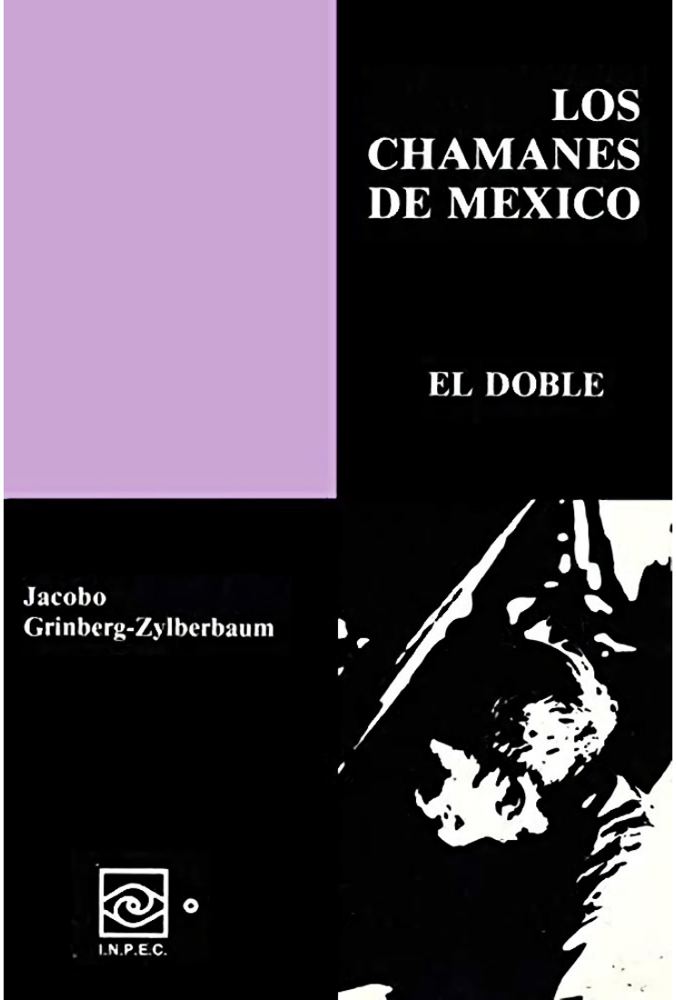
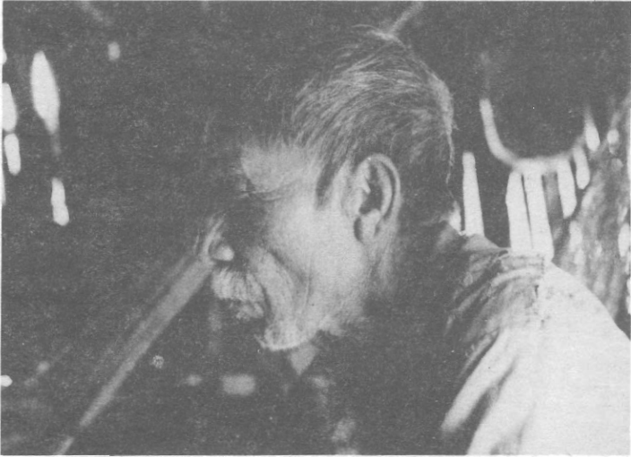
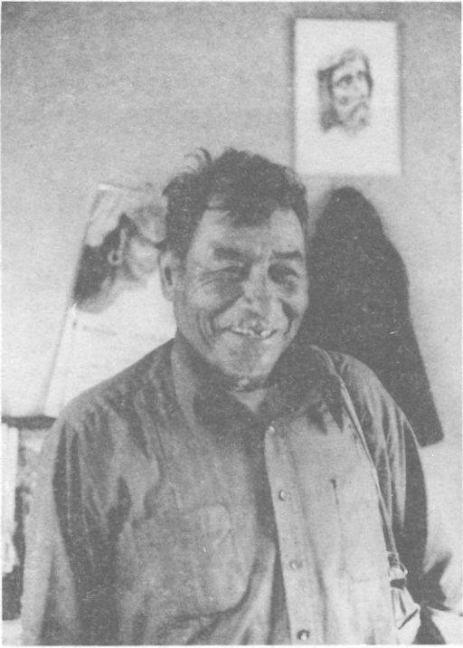
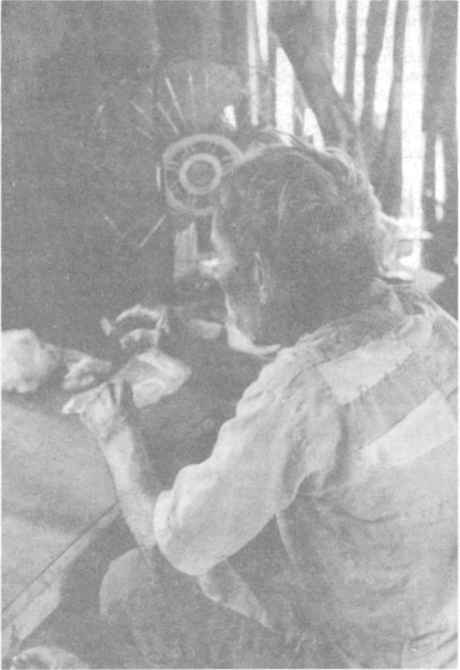
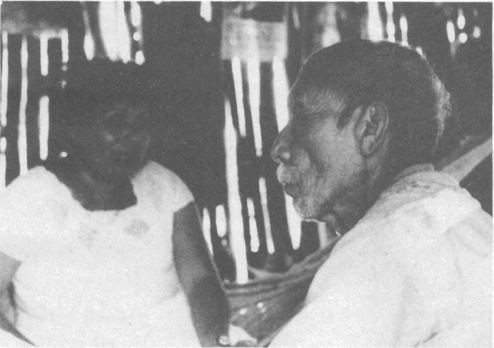

شامانات المكسيك
المجلد السابع
القرين
El Doble
ياكوبو غرينبرغ زيلبرباوم
الترجمة العربية الكاملة
الفصول الأربعة عشر والمراجع
تظهر أعلى كل صفحة بداية أرقام صفحة ملف المصدر والصفحة الأصلية المطبوعة، ويظهر رقم صفحة الترجمة أسفلها. خُصصت بداية صفحة عربية لكل صفحة مصدر؛ وقد يمتد محتواها إلى أكثر من صفحة عربية. حُفظ ترتيب النسخة المرفقة، والعناوين الوصفية أعلى الصفحات مخصصة للتتبع. التوضيحات التحريرية منفصلة عن نص المؤلف.
الخط والأحجام والهوامش مطابقة لقالب الترجمات السابقة. أُرفق النص العربي القابل للتحرير داخل ملف PDF.
الغلاف
شامانات المكسيك
القرين
ياكوبو غرينبرغ زيلبرباوم

صفحة العنوان
شامانات المكسيك
المجلد السابع
القرين
صفحة العنوان والمؤلف
شامانات المكسيك
المجلد السابع
القرين
ياكوبو غرينبرغ زيلبرباوم
كلية علم النفس
الجامعة الوطنية المستقلة في المكسيك
والمعهد الوطني لدراسة الوعي
حقوق النشر
الطبعة الأولى، 1990.
إن إخراج «القرين» وترتيبه في مجموعه ملك للمؤلف. يُحظر استنساخ هذا العمل جزئيًا أو كليًا، بأية وسيلة أو طريقة، دون إذن كتابي من المؤلف.
أشرفت على الطبعة ماريا إستر سانشيث أريّانو.
© المعهد الوطني لدراسة الوعي، جمعية مدنية.
© ياكوبو غرينبرغ زيلبرباوم.
الرقم الدولي المعياري للكتاب: ISBN 968-6022-07-4.
طُبع وصُنع في المكسيك.
أُنجز جزء من هذا المجلد بفضل دعم المجلس الوطني للعلوم والتكنولوجيا CONACYT، عبر المشروع المشترك بينه وبين الجامعة الوطنية المستقلة في المكسيك UNAM، رقم PCCSNA-030756.
الفهرس
المقدمة — 11.
الفصل الأول: انعدام المصادفة — 13.
الفصل الثاني: اعتبارات فيزيائية ونفسية فسيولوجية بشأن انهيار الدالة الموجية — 21.
الفصل الثالث: انعدام المصادفة في الشامانية المكسيكية — 35.
الفصل الرابع: خصائص القرين — 43.
الفصل الخامس: وجود القرين — 69.
الفصل السادس: تجارب مع القرين — 75.
الفصل السابع: الفسيولوجيا النفسية للأنا والقرين — 83.
الفصل الثامن: انعدام المصادفة واتساع مدة الحاضر — 89.
الفصل التاسع: قوانين انعدام المصادفة — 95.
الفصل العاشر: الحلفاء — 103.
توضيح تحريري: الأرقام في الفهرس هي أرقام صفحات الطبعة الأصلية.
الفهرس — تتمة
الفصل الحادي عشر: تنمية القرين — 109.
الفصل الثاني عشر: تراتب القرين — 117.
الفصل الثالث عشر: بنية الحقل الفائق — 121.
الفصل الرابع عشر: علامات انعدام المصادفة — 127.
المراجع — 141.
المقدمة
يتناول هذا الكتاب انعدام المصادفة وبعض الفرضيات والنظريات والتصورات التي حاولت تفسيره. يبدأ الكتاب بتحليل ما يعرفه العلم المعاصر، ثم يتوغل تدريجيًا في التصورات الشامانية عن هذه الظاهرة. وعلى الرغم من أن كل سلالة من الشامانات تطلق عليها اسمًا مختلفًا، فإنهم جميعًا يقرون بوجودها، ويعدّون الادعاء بإمكان تفسير الواقع بوصفه أعمى وخاضعًا للمصادفة ادعاءً وهميًا.
يشارك الشامانات في انعدام المصادفة من مواقع قوة مختلفة، وبمعونة ومستويات وعي متباينة. ويعرف كل شامان هذه بأسماء مختلفة: يسميها دون لوسيو «عمّال الطقس»، وكانت باتشيتا تسميها «كواوتيموك»، وتسميها دونيا خوسيفينا «الحارس». وحده دون خوان يسميها «القرين».
توجد دراسات عن انعدام المصادفة استخدمت حتى إجراءات إحصائية لتوثيق خصائصه (شميت، 1985). وسوف أستخدم هذه الدراسات معايير للمقارنة في الأوصاف التي سأقدمها في بقية الكتاب.
وتمنح هذه الأوصاف الأخيرة القرين أهمية في تفسير مشاركة الشامان في تطور انعدام المصادفة. يظهر القرين عندما تتجمع قوة شخصية تكفي لجعل حضور «الأنا» نفسه «يقفز» من موطنه
المقدمة — تتمة
في الجسد إلى موضع في الفضاء.
وتنشأ مآثر القوة لدى كبار الشامانات الناهوال، مثل باتشيتا، من القدرة على التحكم في موضع القرين وإدراكه وسلوكه كما لو كان ذلك موضع الجسد نفسه وإدراكه وسلوكه. ولهذا من المهم تحليل مشاركة القرين في انعدام المصادفة.
أود أن أشكر المجلس الوطني للعلوم والتكنولوجيا وكلية علم النفس في الجامعة الوطنية المستقلة في المكسيك على مساعدتهما في إجراء بحث «علم النفس لدى السكان الأصليين في المكسيك»، الذي يُعد هذا الكتاب أحد نتائجه.
ياكوبو غرينبرغ زيلبرباوم
الفصل الأول: انعدام المصادفة
الفصل الأول
انعدام المصادفة
مفهوم انعدام المصادفة
يمكن فهم انعدام المصادفة بطرائق مختلفة، بدءًا من تفسيره نتيجةً لفعل قوى روحية تعنى بسير العالم والكون، وانتهاءً بتفسير ينطلق كليًّا من الفرد، فيحمّل الإنسان نفسه كامل المسؤولية عن الأحداث التي يمرّ بها.
لقد أوكلت القرون الأخيرة إلى العلم ومنهجه مسؤولية دراسة أسباب انعدام المصادفة وتحديدها. وكان هذا الإسناد مسؤولًا عن نشوء نظريات وتصورات عن الواقع، فسرته على أساس سلاسل سببية وحتمية ومتعددة العوامل ومعقدة، وفي الآونة الأخيرة، تزامنية ومعاكسة للزمن.
وهذان الأخيران هما أحدث المحاولات لفهم العلاقات بين الأحداث ومعناها.
تعود الفرضية التزامنية إلى يونغ، الذي افترض وجود مبدأ لا سببي للعلاقات، مرتبط بآلية تُغمر بوساطتها كل أجزاء الكل بواقع ذلك الكل. وهكذا، يتضمن كل حدث، في أي مكان، معنى الكلية، لمجرد انتمائه إليها.*
تتجذر هذه الفكرة اليونغية في الفكر الصيني، وكانت وحدها القادرة على أن تفسر ليونغ العلاقة التي تبدو سحرية بين أحداث كانت تُسمّى حتى ذلك الحين مصادفات وتُعزى إلى الصدفة.
وتنشأ الفرضيات المعاكسة للزمن
* تفترض الهولوغرافيا المعاصرة مبدأً مشابهًا.
نقطة أوميغا والحقل الفائق
من افتراض تيار دو شاردان «نقطة أوميغا»، وتنتهي إلى جسيمات جاك سارفاتي التاكيونية التي تتجاوز سرعة الضوء. ووفقًا لهذا الأخير، تتحدد السببية أساسًا من المستقبل، الذي يعمل منظمًا جاذبًا للأحداث، فتتجمع في أنماط تحاول الاقتراب من أصلها المحدد سلفًا فيه.
ومن المحاولات الأقل خروجًا عن المألوف لتفسير انعدام المصادفة ما تتضمنه مسلمات النظرية السينترجية. فهي تؤكد وجود حقول عصبية تنشأ في الدماغ، وقادرة على التفاعل بعضها مع بعض ومع التنظيم الطاقي للفضاء، فتؤدي إلى حقل فائق يغمر كل شيء، ويحتوي بذرة انطلاق جميع أنماط العلاقات ومحفزها (غرينبرغ زيلبرباوم، ي. 1979).
أثار ألبرت أينشتاين، مع بوريس بودولسكي وناثان روزن، عام 1936، الحاجة إلى تفسير وجود علاقات بين الجسيمات الأولية، مقترحين أن موطنها بحر من الرنين يغمر كل شيء. وانطلاقًا من أينشتاين وبودولسكي وروزن (E.R.P.)، يُقال (سارفاتي، 1985) إن جسيمين، بعد تفاعلهما الفيزيائي، يظلان متصلين أحدهما بالآخر بصرف النظر عن المسافة الفاصلة بينهما. وفي هذه الحالة، يؤدي تعديل أحد الجسيمين إلى تعديل مماثل في الآخر. وقد أكد أسبكت تجريبيًا، في باريس عام 1982، مفارقة E.R.P.
وقد برهنا نحن أن النشاط
تجارب شميت
الدماغي لدى أشخاص يتفاعلون بعضهم مع بعض يتعرض لأثر انتقال متبادل، فسرناه بأنه نتيجة تفاعل طاقي بين الحقول العصبية (غرينبرغ زيلبرباوم، ي. وراموس، ي. 1987)، لكنه قد يقوم أيضًا على مفارقة أينشتاين وبودولسكي وروزن، أو حتى على «التزامنية» بمفهوم يونغ.
ومن أكثر التطورات وعدًا في دراسة انعدام المصادفة ما تتضمنه تجارب هلموت شميت. فقد نشر هذا الباحث الألماني المقيم في الولايات المتحدة الأمريكية نتائج أبحاثه المثيرة في مجلات فيزيائية رصينة. وفي هذه التجارب، يُقرن جهاز لإصدار جسيمات مشعة بدارة زناد شميت وسيطة، موصولة ببرامج حاسوبية للأعداد الثنائية العشوائية (0 و1). وكلما شغّل جسيم الجهاز، توقف برنامج الأعداد وسُجل العدد المعني.
وبهذه الطريقة، نحصل على 50% من الأصفار و50% من الآحاد في كل جلسة من التجربة. وتُسجل كل متتالية من الأصفار والآحاد في كل جلسة على قرص مرن، وتُطبع على الورق. وفي الوقت نفسه، يجعل كل رقم ثنائي مؤشرًا على شاشة يتجه يمينًا أمام متتالية عشوائية من الآحاد، ويسارًا أمام متتالية من الأصفار.
وفي تجاربه الأولى، استطاع شميت أن يبرهن أن أشخاصًا مدرَّبين كانوا قادرين على التفاعل مع الحاسوب ومع الباعث المشع، وتعديل متتالية الأعداد حتى تحقيق
المراقب وتثبيت المتتالية
تغير ذي دلالة إحصائية في نسبة الأصفار والآحاد.
وكان المشاركون يستدلّون على أثر محاولاتهم من استمرار انحراف المؤشّر نحو إحدى جهتي الشاشة، وهو ما كان يزوّدهم بالتغذية الراجعة.
وبعد إثبات ما سبق، شرع شميت في تشغيل نظامه مع منع وجود أي مراقب.* وبعد أربع وعشرين ساعة، طلب من شخص مدرَّب أن يحوّل المتتالية نحو أحد الطرفين، ولم يكن المشارك يعلم أن ما يُعرض عليه تسجيلٌ لمتتالية أعداد ولّدها الجهاز قبل أربع وعشرين ساعة، من دون حضور أيّ مراقب. وقد استطاع الشخص تعديل المتتالية في الاتجاه المطلوب.
وفي التجربة الثالثة، عاد شميت إلى تسجيل متتالية عشوائية دون مراقب. وبعد ساعة، عرض المتتالية على مراقب غير مدرَّب شاهدها بموقف محايد. وبعد أربع وعشرين ساعة، عرض المتتالية التي سبق أن شوهدت على شخص مدرَّب، وطلب منه تحويلها نحو أحد الطرفين. فلم يستطع ذلك. وهذا يدل على أن مجرد حضور مراقب يكفي لتثبيت متتالية أعداد. أما في غيابه، فيمكن لشخص مدرَّب تعديل المتتالية، حتى في اتجاه زمني معاكس للاتجاه المعتاد.
وبعبارة أخرى، تُظهر نتائج هذه التجارب تأثير المراقب في الواقع. وهذا
* أي إنه حصل على متتالية عشوائية من الأعداد الثنائية، سُجلت وطُبعت، لكن لم يشاهدها أي شخص.
تفسيرات التأثير في الواقع
التأثير نوعان: فمن جهة، يثبّت المراقب الواقع، ومن جهة أخرى، يؤثر فيه بصرف النظر عن زمانيته. وتتفق النتائج مع انعدام المصادفة، ويمكن تفسيرها بطريقتين مختلفتين على الأقل. تفترض الأولى وجود حتمية مطلقة يتحدد فيها كل شيء، حتى الاتجاه المستقبلي لتغيرات الأعداد الثنائية، وحضور الأشخاص المدرَّبين، وغير ذلك. أما إمكان التفسير الثاني فيتفق مع فرضية سارفاتي عن معاكسة الزمن، التي تفترض جسيمات تاكيونية تعكس اتجاه تدفق الزمن حين تتجاوز سرعة الضوء.
ويمكن افتراض أن دماغ المراقب قادر على إصدار جسيمات تاكيونية داخل حقله العصبي، تُحدث الأثر الذي رصده شميت.
ولو عُرضت هذه الفرضية على شامانات المكسيك لرأوا فيها، في ظنّي، إفراطًا في ردّ الظاهرة إلى أسباب فيزيائية، ولنسبوا الآثار التي وصفتُها إلى القرين والحلفاء. وستُعالج هذه الفرضية بالتفصيل في الفصول المقبلة.
وأيًا يكن ما يفسر نتائج شميت، فإنها تتحدى أفكارنا عن الواقع، وتعطينا فكرة عن المناخ الفكري الذي يعمل فيه روّاد الفيزياء المعاصرة. ووفقًا لهؤلاء الفيزيائيين، قبل أن يكتسب الحدث واقعًا فيزيائيًا، توجد
انهيار الدالة الموجية
سحابة احتمالات تتعلق بالاتجاهات الممكنة لتطوراته.
وفي اللحظة التي يتخذ فيها شخص ما قرارًا، تنهار سحابة الاحتمالات تلك، ومن بين جميع البدائل يزداد احتمال أحدها من قيمة دنيا إلى قيمة قصوى.* وفي تلك اللحظة، يُفعّل خط للعالم. وتسمّي الفيزياء هذا الانهيار لسحابة الاحتمالات بأكملها: انهيار الدالة الموجية.
ومن شأن تفعيل خطوط مختلفة للعالم، والانهيارات المتعاقبة للدوال الموجية المرتبطة بقرارات متنوعة، أن يفسر انعدام المصادفة بمصطلحات الفيزياء الحالية.
ولأن أثر الانهيار، في هذا التصوّر، قد يمتدّ إلى الوراء في الزمن، فإن عالم الأحداث وعلاقاتها أعقد بكثير مما يُظهره لنا الحس المشترك والإدراك المباشر.
* بينما تتلاشى احتمالات بقية البدائل حتى تبلغ الصفر.
الفصل الثاني: اعتبارات فيزيائية ونفسية فسيولوجية بشأن انهيار الدالة الموجية
الفصل الثاني
اعتبارات فيزيائية ونفسية فسيولوجية بشأن انهيار الدالة الموجية
مدة الحاضر
سأستكشف في هذا الفصل أفكارًا وأشارك بعض النتائج التجريبية عن العلاقات بين الوعي والدماغ. وأعتقد أن مجالًا مشتركًا بين الفسيولوجيا النفسية وميكانيكا الكم قد يساعدنا على حل بعض المشكلات التي يتقاسمها التخصصان، ويساعدنا، من جهة أخرى، على فهم الظواهر الشامانية ومآثر رجال المعرفة التنبؤية وقواهم. وسأبدأ ببعض التصورات عن الزمن.
يلزم نحو 50 ملي ثانية من العمليات العصبية لكي تظهر صورة بصرية في الوعي. ويدرك المراقب جميع الأحداث الواقعة خلال تلك الخمسين ملي ثانية كما لو أنها تحدث في وقت واحد وتنتمي إلى إطار إدراكي واحد وموحَّد. لكن المراقب يظهر عند نهاية العمليات اللازمة لتفعيل مُدرَك. وسوف نسمي هذه الخمسين ملي ثانية «مدة الحاضر» للصورة البصرية. وفي هذا الصدد، أجرى غرينبرغ زيلبرباوم وروي جون (1975) تجربة حاولا بوساطتها قياس مدة الحاضر وعلاقتها بالنشاط الدماغي. وكان على المشاركين التمييز بين ضوءين متعاقبين يُعرضان بفواصل تتراوح بين 10 و100 ملي ثانية.
وكان المشاركون يشيرون إلى اللحظة التي يبدؤون فيها رؤية ضوءين بدلًا من واحد. وبلغ متوسط هذا الفاصل نحو 50 ملي ثانية، لكنه تغير تبعًا لتردد
المدة المعرفية للحاضر
تخطيط كهربية دماغ الشخص. وتتطابق مدة الحاضر البصري مع زمن كمون ظهور المكوّن الثانوي للجهد البصري المستثار، ومع وصول نبضات عصبية إلى القشرة البصرية عبر المسارات الواردة الثانوية غير النوعية.
ولأن كل نمط حسي يحتاج إلى زمن مختلف لكي يُفعَّل، فإن لكل نمط مدة مختلفة للحاضر. ولذلك يمكن رسم سلم للتعقيد تحتل فيه كل كيفية مستوى معينًا. ووفق هذا السلم، كلما ازداد التعقيد ازدادت مدة الحاضر للوظيفة المعنية. ومن ثم ترتبط الوظائف المعرفية أيضًا بالزمن، وبما يمكن تسميته «مدة معرفية للحاضر». ومن الأمثلة الجيدة على الوظيفة الأولى اتخاذ قرار بشأن معنى إحساس. وتنطوي هذه الوظيفة المعرفية على انهيار دالة موجية، لأن إحدى الإمكانات تزداد احتمالاتها إلى القيمة القصوى، بينما تنهار البقية.
ولدراسة ما يتغيّر في نشاط الدماغ بتغيّر المعنى، أجرينا، روي جون وأنا، تجربة عام 1981. سجّلنا الجهود الكهربائية التي يستثيرها خطّ رأسي واحد حين يقرأه المشاركون أنفسهم مرةً على أنه الرقم 1 ومرةً على أنه الحرف اللاتيني I. ووجدنا أن الجهود المستثارة في المناطق الجدارية والصدغية من القشرة البشرية، بالشكل الهندسي نفسه، أي الخط الرأسي، حين يُفسر بهاتين الطريقتين المختلفتين، أظهرت فروقًا
مستويات الحاضر والتأثير في المستقبل
ذات دلالة إحصائية في مكوّناتها ذات الكمون البالغ 165 ملي ثانية (انظر المجلد الخامس). وهكذا، تبلغ مدة الحاضر اللازمة لإدراك المعنى ثلاثة أضعاف المدة اللازمة للإدراك البصري على الأقل. والمدة المعرفية للحاضر هي الزمن اللازم لانهيار الدالة الموجية المتعلقة بقرارات بشأن معنى حدث ما.
ويمكن افتراض أن كل كائن حي يعمل ضمن مدد مختلفة للحاضر، وأن كلًا منها يُحدث انهيارات للدالة الموجية تبعًا لتعقيد دماغه. وبهذا المعنى، تكون لدى الحشرة «مدة إدراكية للحاضر» ضئيلة جدًا بالمقارنة بمدتنا. ومن شأن تفاعل كائنين يعملان ضمن مدتين مختلفتين للحاضر أن يُحدث آثارًا زمنية شديدة المفارقة، وخصوصًا للكائن الأقل تعقيدًا. فعلى سبيل المثال، يقع قرارنا بإطعام نملة، بالنسبة إليها، في مستقبل لا يمكن تصوره، بينما يقع بالنسبة إلينا في «مدتنا الإرادية للحاضر». فحاضرنا هو مستقبل النملة، ويحدد انهيارًا للدالة الموجية لسلوكها المستقبلي. وبعبارة أخرى، نحدد الانهيار المستقبلي للدالة الموجية عند النملة ضمن مدتنا الإرادية للحاضر. وهذا الانهيار «المستقبلي» يحدث أيضًا خلال التفاعل بين مستويين مختلفين من الوعي داخل
السببية المستقبلية
كائن واحد. وبهذا المعنى، يؤثر عملنا المعرفي في قدراتنا الحسية، على الرغم من أن التنشيط الحسي يظهر زمنيًا قبل الوظيفة المعرفية. وتفسر هذه القدرات كيف أُدرك الخط الرأسي نفسه في تجربتنا بوصفه عددًا أو حرفًا تبعًا لإدراك المشاركين المعرفي، حتى وإن ظهر هذا الإدراك المعرفي زمنيًا بعد الإدراك الحسي. وبهذا المعنى، يؤثر داخلنا حدث مستقبلي في حدث سابق. ويرتبط هذا «الانهيار الذاتي» للدالة الموجية بتغيرات دماغية مهمة، ولذلك يمنعنا من عدّ عمليات «السببية المستقبلية» هذه وهمية.
ووفقًا لسارفاتي (1985)، بدأ الحديث في ميكانيكا الكم عن إمكان أن يحدّد ما يقع في المستقبل أحداثًا وقعت في الماضي، وعن «ممرات» في الزمن، وعن كون مكوَّن من «أوتار» تقع فيه تفاعلات تتجاوز سرعة الضوء. والأدلة التجريبية التي تُظهر تفاعلات تتجاوز سرعة الضوء بين الفوتونات (أسبكت، 1982) تتحدى صلاحية تصورات أينشتاين عن الزمن وحدود السرعة في كوننا. وبمصطلحات سارفاتي (1985)، يمكن أن تقع التفاعلات بين الجسيمات رجوعًا في الزمن، وقد تحدث العلاقات بين الأحداث في بُعد زمني تكون فيه الآثار الفورية مألوفة ومتوقعة. وتتحدى هذه الأفكار صلاحية مفاهيمنا عن الزمن والسببية والعالم كما ندركه، وتفترض وجود
التوحيد والخوارزميات العصبية
جسيمات «خارج الزمن» تسمى التاكيونات.
ومن منظور الفسيولوجيا النفسية، ينبغي أن يدمج «التصور التاكيوني» الوعي بوصفه الوسيط الذي يصل الأحداث بعضها ببعض.
وقد افتُرض (كويلي، 1980) أن الوعي يظهر عندما يحدث توحيد للمعلومات المتفرقة. ففي الدماغ، تنشّط دوائر متوازية ومتقاربة، أي تسلسلية، خوارزميات عصبية (غرينبرغ زيلبرباوم، 1976ب)، توحّد النشاط العصبي الذي يكون، قبل ذلك التوحيد، مشتتًا. ومن الأمثلة الجيدة على هذا التنشيط الخوارزمي العصبي تقارب 365 مليون مستقبِل في الشبكية البشرية نحو مليون ليف في العصب البصري (غرينبرغ زيلبرباوم، 1976). ويوحّد كل محور عصبي في العصب البصري نشاط عدة مئات من المستقبِلات في خوارزمية عصبية. وترتبط مدة الحاضر بدرجة الخوارزمة ومستواها. فكل مستوى تالٍ من الخوارزمة يتطلب زمنًا أطول لبلوغه، وبذلك يستوعب مزيدًا من الزمن. وإذا كان مستوى من الوعي أو كيفية حسية يرتبط بمستوى محدد من الخوارزمة ومدة الحاضر، وإذا كانت وظائف أشد تعقيدًا تنشط كلما ازداد توحيد العمليات العصبية، فإن كل مستوى يُحدث انهيار الدالة الموجية للمستوى السابق. وفي هذه السلسلة من الأحداث، يكون المراقب دائمًا في مستوى التوحيد التالي، ويعمل «مرشدًا» للعملية. وبهذا المعنى، يكون المراقب دائمًا الخوارزمية الأخيرة،
التماسك بين نصفي الدماغ والأنا الخالصة
وحين يتدخل، يقع انهيار للدالة الموجية للمستويات السابقة، بوصفه نتيجة حتمية.
ولدراسة العلاقات بين مستويات التوحيد وتعقيد الوظائف النفسية المنشطة، أجرينا سلسلة تجارب دُرّب فيها أشخاص على استكشاف حالاتهم الداخلية وربط هذه الحالات بنشاطهم الدماغي. ولأن التماسك يبدو مقياسًا جيدًا لمستوى توحيد النشاط الدماغي (كولتر وشو، 1982)، درّبنا المشاركين على زيادة مستويات التماسك بين نصفي أدمغتهم باستخدام تقنية للتغذية الراجعة (غرينبرغ زيلبرباوم، 1985)، وطلبنا منهم أن يصفوا لنا ما يطرأ على تجربتهم الداخلية أثناء التجربة. استغرقت الدراسة خمس سنوات، واستطعنا دراسة أكثر من ثلاثين شخصًا. وأفادوا جميعًا، بلا استثناء، بأن الزيادات في مستوى التماسك بين نصفي الدماغ ارتبطت بمستوى توحيدهم الداخلي. وبعبارة أخرى، كلما ازداد التماسك، ازداد أيضًا شعور الشخص بالتكامل الداخلي والتوحيد، إلى أن تنشط الأنا الخالصة عند مستويات مرتفعة جدًا من التماسك.
ولأن التماسك يقيس مستوى التوحيد الدماغي، فإن هذه النتيجة تدل على أن أكثر الوظائف النفسية تعقيدًا، وهي الأنا الخالصة، تنشط عند أعلى مستوى من التوحيد الدماغي. وقد رأينا أن انهيار الدالة الموجية يحدث كلما اتُّخذ قرار. فقبل اتخاذ القرار، ترتبط احتمالات
التوحيد المعرفي والتغيرات الخارجية
وقوع حدث بدالة معقدة يكون فيها الحدث جزءًا من سحابة احتمالات. وبعد اتخاذ القرار، تنهار سحابة الاحتمالات، ويزداد احتمال حدث واحد إلى القيمة القصوى.
ومن مرجع نفسي فسيولوجي، يبدو أن انهيار الدالة الموجية يحدث حين تتحقق درجة جديدة من الخوارزمة العصبية. وتشير بعض البيانات التجريبية إلى أن هذه الظاهرة تصحبها أيضًا تغيرات في قوى «خارجية»، وكذلك زيادة في مستوى التماسك بين نصفي الدماغ البشري.
وفي تجربة (غرينبرغ زيلبرباوم وتاباتشنيك، 1981)، وجدنا أنه حين يعثر المشاركون على علاقة معرفية بين قطعتين من المعلومات تبدوان غير مترابطتين، يزداد التماسك بين نصفي أدمغتهم. ومن ثم يرتبط توحيد أجزاء غير مترابطة من المعلومات بزيادة التماسك بين نصفي الدماغ. وفي التجربة نفسها، لاحظنا أن هذه التغيرات في التماسك بين نصفي الدماغ ارتبطت بتغيرات في وزن قطعة صغيرة من مادة معدنية موضوعة داخل قفص خشبي، داخل صندوق فاراداي المعدني، على مسافة 90 سم من الشخص.
وكما رأينا، لأن كل مستوى جديد من التوحيد ينطوي على اتساع مدة الحاضر، سيبدو المراقب الموجود في كل مستوى كأنه ينفذ
قوة المراقبة والمتصل السينترجي
إلى معرفة ما يُعَدّ مستقبلًا من منظور المستويات التي تكون فيها مدة الحاضر أقصر. ويمكن تفسير «ممرات» الزمن التي افترضها السير فريد هويل (1984) بأنها تفاعل بين مستويين من الوعي، يقع كل منهما ضمن مدة مختلفة للحاضر. ويمكن تفسير السلوك التنبؤي لبعض الشامانات بطريقة مشابهة. كذلك يمكن تفسير انهيار الدالة الموجية بوصفه نتيجة بدء مستوى جديد من التوحيد يتفاعل مع مستوى آخر. وهذا التفاعل، في الحقيقة، احتواء، لأن المستوى الجديد يحتوي المستوى السابق حين يستطيع العثور على خوارزميته. وفي ذلك تكمن القوة الحقيقية للمراقبة. فعندما يستطيع شخص أن يراقب، يتغير ما يراقبه. ويمكن لأي شخص يتعلم مراقبة العمليات التي تجري داخل نفسه أن يختبر مثالًا جيدًا على هذه القوة: فالارتباك، حين يُراقَب، يتحول إلى وضوح، والخوف إلى سكينة، والظلمة إلى نور.
وفي النظرية السينترجية لنشوء التجربة، يُنظر إلى كل مستوى من الاحتواء يعمل ضمن مدة متسعة للحاضر، ويزيد تعقيد الوظيفة المرتبطة ببدئه، بوصفه جزءًا من متصل يُسمّى المتصل السينترجي. وكلما ازدادت السينترجية، ازداد التماسك ومدة الحاضر والتعقيد. ونتيجة جميع التفاعلات العصبية داخل الدماغ، ينشط حقل عصبي. ويتغير تعقيد هذا الحقل
الحقل العصبي وشبكة الزمكان
حين يطرأ تغير على المستوى السينترجي للدماغ. وهذا الحقل فائق التعقيد قادر على التفاعل مع شبكة الزمكان،* فينشئ بذلك نمط تداخل ندركه صورةً (غرينبرغ زيلبرباوم، ي. 1981).
وقد افترضت أن الحقل العصبي قادر على التفاعل مع حقول عصبية أخرى، ومع متصل الزمكان، ومع الدماغ والمادة (غرينبرغ زيلبرباوم، ي. 1981)، وربما يعدّل اللف المغزلي للجسيمات الأولية (سارفاتي، 1985). والخصائص الفيزيائية للحقل العصبي غير معروفة، لكن ربما كانت طبيعته تاكيونية، ويحتوي داخله جميع الحقول الأخرى التي تصفها الفيزياء.
ولبحث إمكان وجود الحقل العصبي برصد بعض الظواهر المرتبطة به، أجرينا عددًا من التجارب سجلنا فيها النشاط الكهربائي الدماغي وأنماط التماسك بين نصفي الدماغ لدى أشخاص في جلسات يقيمون فيها تواصلًا مباشرًا بعضهم مع بعض. وفي التواصل المباشر، لا توجد قرائن حسية تسند التواصل. وفي التجارب الموصوفة بالتفصيل في «شامانات المكسيك»، المجلد الخامس، وجدنا أن أنماط التماسك بين نصفي الدماغ أصبحت متشابهة جدًا عند اتباع إجراء التواصل المباشر.
* الشبكة (Lattice) هي المصفوفة الطاقية التي تقوم عليها قاعدة الزمكان.
الرؤية خارج العين والحقل العصبي
ولاحظنا أيضًا أن هذا التشابه لم يكن أثرًا غير نوعي.
واستطعنا، علاوة على ذلك، إظهار أن أنماط التخطيط الكهربائي الدماغي للمشاركين أصبحت شبه متطابقة خلال جلسات التواصل.
وأخيرًا، أجرينا مجموعة من التجارب تعلّم فيها أطفال معصوبو الأعين فك ترميز معلومات مصوَّرة مباشرة. وقد ازدادت هذه القدرة على الرؤية خارج العين حين كان الطفل على تماس مع بلورة كوارتز (غرينبرغ زيلبرباوم، 1985).
وتشير هذه النتائج إلى أن الدماغ قادر على فك ترميز المعلومات الموجودة في شبكة الزمكان بطريقة مباشرة، وربما من خلال تفعيل حقل عصبي وتفاعلاته. ويمكن تعديل هذا الحقل العصبي ببلورات الكوارتز، وربما يزداد بذلك تماسكه الداخلي.
وقد يعمل الحقل العصبي بوصفه «الجهاز» الفيزيائي الذي يصل الأدمغة، والوسيط الذي يقع من خلاله انهيار الدالة الموجية. وإذا كان التفاعل بين الحقل العصبي والشبكة هو الظاهرة الأوثق ارتباطًا بما نعيشه، وإذا ارتبط مستوى السينترجية في ذلك الحقل بتغيّر الكيفية التي نعيش بها التجربة، فالحقل العصبي وتفاعلاته هي الظواهر الفيزيائية المقترنة بالتجربة والوعي.
وحين يتفاعل الحقل العصبي مع شبكة الفضاء، ينشأ نمط تداخل فائق التعقيد. ويتفاعل
نمطا الترميز الدماغي
المراقب مع هذا النمط ويحوّل بنيته الطاقية إلى تجربة واعية وكيفية. ويسبب تموضع المراقب انهيارًا للدالة الموجية. وكل تفعيل لكيفية محددة من التجربة هو أيضًا انهيار للدالة الموجية، لأن إمكانية واحدة تُحفَّز من بين جميع إمكانات التنشيط، وتظهر في الوعي مستبعدةً سائر الإمكانات.
وينعكس مستوى الخوارزمة العصبية في سينترجية الحقل العصبي، ومن ثم في خصائص نمط التداخل الذي ينشط بفعل التفاعل بين الحقول. ولذلك يؤثر مستوى الخوارزمة العصبية في التجربة، ويحدد تعقيدها وكيفيتها. ونتيجة لذلك، يرتبط مستوى الخوارزمة العصبية أيضًا بانهيار الدالة الموجية.
وخلاصة الأمر أن الدماغ يعالج المعلومات باستخدام نمطين مختلفين من الترميز على الأقل، لكنهما مترابطان: أحدهما رقمي والآخر تماثلي. يرتبط النمط الأول بالتنظيم الاحتوائي والتقاربي للدوائر الدماغية، وبتفعيل الخوارزميات العصبية. أما نمط الترميز الدماغي الثاني فيرتبط بتفعيل حقول طاقية.
يعالج نمط الخوارزمة العصبية المعلومات بطريقة تراتبية، ويختص بالمنطق الخطي للنظام. واللغة والتفكير التسلسلي والرياضيات نتائجه. ويعمل هذا النمط من دون إحداث تحولات كيفية. أما
الصور والخوارزميات وقوة الشامانات
نمط الحقول الطاقية فيختص بتفعيل تنظيمات للطاقة فائقة التعقيد في بُعد الزمكان. ويعمل بإحداث تحولات كيفية تظهر بوصفها أنماط تجربتنا الحسية.
وكلا نمطي النشاط العصبي مترابطان.
فتتحول التوزيعات الطاقية المعقدة، أي الصور، إلى خوارزميات تُستخدم لاختزال المعلومات واكتساب قوة تجريد. وفي المقابل، تستطيع الخوارزميات العصبية تفعيل توزيعات طاقية، ربما من خلال تنشيط دوائر التباعد.
ويدرس فرانسيسكو غوميث مونت (1985) إمكانية تحويل صورة بصرية إلى خوارزمية، وهي إمكانية تبشر بالنجاح. ولذلك ليس من المستحيل التفكير في أن الدماغ يستطيع إجراء خوارزمات معقدة، واستخدام الخوارزميات لزيادة قوة تجريده.
وأخيرًا، أرى أن انهيار الدالة الموجية نتيجة لتفاعل المراقب مع الكون الفيزيائي.
ويبدو أن شامانات المكسيك استطاعوا أن يستقروا بوصفهم مراقبين في قمة المتصل السينترجي؛ وعلى هذا النحو تُفهم قدرتهم التنبؤية وقوتهم على المادة والطاقة، فضلًا عن مواهبهم العلاجية.
الفصل الثالث: انعدام المصادفة في الشامانية
الفصل الثالث
انعدام المصادفة في الشامانية
مستويات القوة واتخاذ القرار
في التصور الشاماني المكسيكي، تُنفَّذ القرارات التي يترتّب عليها انهيار الدوال الموجية على مراتب مختلفة. ويعتمد مستوى الانهيار ومجالات الواقع المتأثرة به على قوة الشامان. وكلما عظمت قوته، وقع الانهيار على مقربة من مصدر جميع الأحداث. وكلما قلّت قوته، وقع الانهيار مرتبطًا بجوانب أكثر عينية من الواقع.
وتقر كل سلالة بوجود مراتب لمستويات القوة. فدون لوسيو يعدّ العالم المرئي أدنى مراتب القوة. والمستوى التالي من القوة هو مستوى يحكم العالم المرئي، ويسميه دون لوسيو العالم غير المرئي. وتتخذ القرارات العينية في العالم المرئي النساء والرجال ذوو الأجساد العضوية وقوى الطبيعة؛ لكن من يقررون حقًا ما يحدث فيه هم سكان العالم الآخر غير المرئيين: «عمّال الطقس».
ووفقًا لدون لوسيو، توجد مجموعات من عمّال الطقس يقودها رعاة يحتلون المرتبة التالية، ويقررون خطوط العالم لقطيعهم من عمّال الطقس. وأخيرًا، فوق مجموع الرعاة وبأقصى قوة على اتخاذ القرار، يوجد راعي الرعاة. وهو قريب من المركز الذي تنبع منه جميع الأحداث، ولذلك يستطيع إحداث انهيار الدالة الموجية الأولية، التي تحدد بدورها انهيار الدوال الموجية لبقية المستويات.
سلالات الشامانات ومراتب الواقع
ويُفسَّر انعدام المصادفة بوصفه أثرًا لخلق خطوط العالم المختلفة التي تنشط بالانهيارات المختلفة.
والشامان الأعظم قوة هو الأقرب إلى راعي الرعاة، ولذلك فهو الأقدر على تفعيل خطوط العالم في جميع المستويات.
أما سلالة دونيا باتشيتا، فتقر بوجود ثلاثة مستويات للواقع على الأقل: مستوى عيني ومرئي يشغله سكان العالم وعلاقاتهم؛ ومستوى ثانٍ يسكنه حماة الشامانات؛ ومستوى ثالث يقوده أب كلي العلم والقدرة.
وكانت باتشيتا تحتل أحد مواقع القوة، لأنها، وفقًا لقولها، كانت تحت حماية أحد أعظم كائنات العالم غير المرئي، كواوتيموك، آخر أباطرة الأزتك والقائد الحالي لعالم حماة كوكبنا.
وسواء أكان ما سبق دقيقًا أم لا، فالثابت في نظري أن باتشيتا كانت تتصل بقوة هائلة تتيح لها أن تتصرّف في المادة والطاقة بمهارة تامة وفاعلية كاملة.
وتذكّر الاعتبارات السابقة بتقاليد البوذية التانترية التبتية وممارساتها، التي يقول فيها الرهبان إنهم يستطيعون تفعيل صلات بآلهتهم يتلقون منها القوة. وتتحدث القبّالة أيضًا عن مستويات تراتبية تسميها سفيروت.*
* توجد عشرة سفيروت، بدءًا من المرتبطة
توضيح تحريري: تتمة الهامش في صفحة المصدر 34، بعد صورتين في الأصل.
دون بانشيتو من يوكاتان

دون بانشيتو من يوكاتان.
دون لوسيو

دون لوسيو.
الحراس والعرافة وسلالة دون خوان
بالنسبة إلى دونيا خوسيفينا من أواخاكا، لا يمكن الشك في حقيقة وجود الحراس والحلفاء والحماة. فهم يحرصون على أن تتبع الأحداث مسارًا صحيحًا، وأن تحقق إرادة الشامان، ويقومون في الوقت نفسه بإرشاده.
أما دون بانشيتو فيرى أن الأحداث تجري وفق نظام، بل يرى أن بالإمكان التنبؤ بها أيضًا. ووفقًا لهذا الشامان الناهوال، توجد نماذج للواقع، وتُرسم تتابعاتها في النجوم. ويمكن اكتشاف مستقبل الأحداث في محتويات الأحلام وفي النجوم.
وتنتشر بين شامانات المايا عادة قراءة المستقبل باستخدام إجراءات مختلفة، سبق أن وصفتها في مجلدات أخرى من هذه السلسلة نفسها. وكلها تنضح بفكرة انعدام المصادفة. وهذه الأخيرة موضع إجماع يكاد يكون تامًا في الشامانية المكسيكية.
والسلالة الأعظم قدرة مفهومية في الشامانية المكسيكية هي، بلا شك، سلالة دون خوان ماتوس من سونورا. ووفقًا لهذا الشامان، فإن «القوة» هي التي تحدد الأحداث. ويسمي دون خوان أفراد
تتمة هامش صفحة المصدر 31: بالمملكة المرئية والعينية، إلى المرتبطة بالقرب من المُفيض. ووفق القبّالة، يكون كل فعل في البدء مُفاضًا، ثم مخلوقًا، ثم مشكَّلًا، وأخيرًا متجليًا بالفعل. وتحتوي كل سفيرا هذه العمليات الأربع: الفيض (Azilut)، والخلق (Beriah)، والتشكيل (Yezirah)، والفعل (Asiah). ولا وجود للمصادفة في القبّالة.
المحارب والقرين
سلالته محاربين. ووفقًا لدون خوان، فإن استقامة المحارب التي لا تشوبها شائبة هي التي تحدّد ما تختاره «القوة» له. وإذا جمع المحارب هذه الاستقامة إلى القوّة، فقد نجح في تنمية قرينه. وهذا يعمل في العالم غير المرئي، وتُعد أفعاله جزءًا مهمًا من أنماط انعدام المصادفة.
ويستحق مفهوم القرين دراسة خاصة، لأن فهمه العميق يتيح استيعاب بعض جوانب انعدام المصادفة. ولذلك سيتيح لنا الفصل المقبل التوغل في واقع القرين.
الفصل الرابع: خصائص القرين
الفصل الرابع
خصائص القرين
تجارب الخروج من الجسد
تنقل سيليا غرين (1968أ) في كتابها «تجارب الخروج من الجسد» (Out-of-the-Body Experiences) تجارب عدد كبير من الأشخاص الذين اختبروا الحالة خارج الجسدية وتحللها؛ أي الذين استطاعوا، لأسباب مختلفة، تفعيل القرين. وتعرّف سيليا غرين «التجربة خارج الجسدية» بأنها تجربة تبدو فيها الأشياء للمراقب مرتَّبةً بحيث يشعر أنه يراها من موضع غير الموضع الذي يشغله جسده. وفيما يلي عرض موجز لتحليلها وبعض الروايات الواردة في كتابها.
توضح سيليا غرين أن الشخص، أثناء تجربة خارج الجسد، يكون منفصلًا عن جسده الفيزيائي، ويدرك محيطه من منظور مختلف عن المعتاد. وقد تحدث هذه التجارب أثناء نوم الشخص، أو أثناء أدائه أنشطته اليومية أيضًا.
«...استيقظت فجأة قبيل الفجر. نهضت، وانحنيت وأنا واقفة لأرتدي خفّي. وحين نظرت إلى السرير، رأيت نفسي بوضوح ما أزال مستلقية فيه إلى جانب زوجي».
«...كنت أسافر في حافلة من بيتي إلى بلدة قريبة. كنت جالسًا نحو الخلف أنظر من النافذة، عندما وجدت نفسي فجأة، دون إنذار، أراقب نفسي من درج الحافلة. وبدا أن جميع حواسي، من بصر وإحساس وما إلى ذلك، موجودة على الدرج،
التجربة الإرادية والتجربة العفوية
لكن جسدي الحقيقي ظل جالسًا هناك».
ووفقًا لسيليا غرين (1968أ)، يمكن تقسيم الأشخاص الذين اختبروا هذه الحالات إلى فئتين متميزتين. تتكون الأولى من أشخاص معينين يستطيعون، مثل الشامانات، إحداث حالة خارج جسدية بإرادتهم. ويبدو أن هؤلاء يمرون بفترة تعلم يعتادون خلالها الحالة خارج الجسدية تدريجيًا، ويتعلمون تطوير تقنية يستطيعون بوساطتها إنتاج هذه الحالة متى شاؤوا.
لكن معظم التقارير تأتي من أشخاص اختبروا الحالة خارج الجسدية دون إرادة. ويعيش عدد كبير منهم هذه التجربة مرة واحدة فقط، وتشير أبحاث سيليا غرين، التي تسندها دراسات أخرى لمولدوون وكارينغتون (1972)، إلى أن الظروف النفسية في هذه الحالات تتميز بوجود نوع من الضغط، يرتبط كثيرًا بصدمة بدنية كالمرض أو الحادث.
«عندما استعدت وعيي، كنت أتأمل جسدي الممدد على أرض صيدلية من موضع ما فوق الباب. ورأيت جميع الأشخاص في المحل، وسمعت رجلًا يستدعي طبيبًا».
ومع ذلك، يكون الضغط في حالة من كل أربع حالات من هذا النوع ذا منشأ نفسي بحت. وإذا طالت فترة الضغط،
الضغط والتساؤل عن الهوية
فقد تتكرر الحالة خارج الجسدية مرات عدة. وتوجد أمثلة لأشخاص اختبروا هذه الحالة كثيرًا خلال فترة تميزت بقلق وتوتر مستمرين، لكنهم لم يعودوا إلى تجارب من هذا النوع في أي مرحلة أخرى من حياتهم.
«قبل بضع سنوات، كنت أعمل في وظيفة سكرتارية شديدة التشويق، لكنها كانت شديدة المتطلبات في الوقت نفسه، وكان لدي قدر كبير من العمل. وفي لحظات الضغط الشديد، لاحظت أنني أنفصل تلقائيًا، وأستطيع مراقبة نفسي وأنا أعمل، رغم أنني لم أكن واعية بأنني أعمل. وفي تلك المناسبات، التي ربما وقعت بين عشرين وثلاثين مرة خلال خمس سنوات، كنت أقف دائمًا خلف نفسي؛ أرى ظهر كرسيي وظهري، وأراقب نفسي أعمل...»
وتوجد أيضًا بعض الحالات التي تظهر فيها الحالة خارج الجسدية نتيجة تساؤلات فلسفية، ولا سيما عن هوية الشخص. وفي بعض هذه الحالات تستمر هذه التساؤلات أثناء الحالة خارج الجسدية، ولا تقتصر على سبقها.
«كنت أحقق هذا عادةً بأن أقول لنفسي: من أنا؟ ما أنا؟ وأركّز كثيرًا على هذين السؤالين... وأُلزم نفسي بذلك... ما أنا؟ من أنا؟ كنت أكرر هذين السؤالين مرات عدة، مركزًا عليهما وناسيًا ما
دون بانشيتو

دون بانشيتو.
تجارب الجسد البديل وتجارب انعدام الجسد
يحيط بي. وعندئذ كنت أشعر كأنني منفصل عن جسدي الذي ما يزال على الأرض. وكنت أشعر كأنني بين الغيوم. وأذكر أنني فعلت ذلك في حافلة وأنا ذاهب إلى المدرسة...»
وعلى الرغم من تكرر اقتران نوع من الضغط بهذا النوع من التجارب خارج الجسدية، توجد حالات أخرى يصف فيها الشخص الانفعال السابق للحالة بأنه سعادة.
والتجارب ذات الجسد البديل، أي التجارب خارج الجسدية التي يرتبط فيها المُدرِك بكيان يبدو مكانيًا، ويشعر أن علاقته به مماثلة لعلاقته بجسده الفيزيائي في حالته العادية، ليست شائعة بقدر تجارب انعدام الجسد. وتعرّف سيليا غرين تجربة انعدام الجسد بأنها حالة خارج جسدية لا يعي فيها الشخص مؤقتًا ارتباطه بجسد أو كيان مكاني. ووفقًا لنتائج أبحاث سيليا غرين، وصف ثمانون بالمئة من أفراد الفئة الثانية حالهم بأنهم كانوا أشبهَ بـ«وعي بلا جسد»، مع أن القليل منهم فقط قالوا إنهم انتبهوا أثناء التجربة نفسها إلى غياب الإحساس بالجسد. وعلّق عدة أشخاص بأنهم لم يدركوا عدم تماهيهم مع أي نوع من الأجساد إلا حين تأملوا التجربة لاحقًا.
وتذكر سيليا غرين عاملين نفسيين رئيسيين يمنعان الشخص من إدراك أنه في
الإحساس بالاكتمال والوعي بالجسد
حالة بلا جسد. الأول أن انتباهه موجّه إلى الخارج؛ فما يهمه أساسًا هو ما يحدث أمامه، ويفترض أنه، بوصفه المراقب، في حالته المعتادة. أما العامل الثاني فهو شعور «بالاكتمال»: «لا أذكر أنني كنت واعيًا بذراعيّ أو ساقيّ، ومع ذلك شعرت بأنني كامل».
وفي بعض الحالات، على الرغم من أن الشخص لا يذكر وعيًا بصريًا بكيان مكاني يرتبط به، يبدو أن لديه وعيًا ضمنيًا بهذا الكيان، يشبه إلى حد ما وعيه الطبيعي بالحس العميق لجسده الفيزيائي. وهكذا قد يقول شخص: «لم يكن لدي أي “جسد”، مع أنني كنت أرى وأسمع». «يبدو أنني كنت واعيًا بجسد وأطراف، رغم أنها لم تكن تُرى». «...مع أنني لم أره قط، أشعر بأنني شغلت نوعًا ما من الأجساد».
وفي حالات أخرى، لا يذكر الشخص صراحة وجود جسد، لكن بعض الكلمات التي يستخدمها لوصف التجربة توحي بأنه شعر كما لو كان لديه جسد عادي: «...كنت جالسًا...»؛ «...ثم أذكر أنني وقفت...»؛ «مدّ قدميه وأمسكه بأصابع قدميه».
ويبدو أن من يخوض تجربة خارج جسدية يكون واعيًا بأحاسيس جسده الفيزيائي. ويُبلغ هؤلاء عن شعور بالانفصال عن أجسادهم الفيزيائية. ويبدو أن هناك رقابة نفسية أو آلية حجب فسيولوجية تمنع أحاسيس الجسد الفيزيائي من النفاذ إلى وعي شخص يختبر
حالة غيديس
الحالة خارج الجسدية.
وانفعاليًا، تتميز الحالة خارج الجسدية بشعور «بالاكتمال». وقد علّق كثير من الأشخاص على إحساسهم بالعافية والواقعية في هذه الحالة، ولم يقل أي شخص إنه شعر بأنه ناقص أو بلا جوهر أو غير حقيقي.
وفيما يلي بعض حالات التجارب خارج الجسدية التي نشرها مولدوون وكارينغتون (1972)، ويروي أصحابها كيف خرجوا من أجسادهم ويصفون خبراتهم في هذه الحالة.
حالة غيديس
هذه حالة إسقاط للقرين عرضها السير أوكلاند غيديس على الجمعية الطبية الملكية في إدنبرة في 26 فبراير 1937. وكان السير أوكلاند، وهو طبيب وأستاذ سابق للتشريح، يروي تجربة صديق له، طبيب أيضًا، كان قد أشرف على الموت، وظل واعيًا في تلك الأثناء في حالة وصفها بالخروج من الجسد. وبعد تعافيه، أملى هذا الصديق تجربته على سكرتيرة، وهذه هي الرواية التي تُعرض فيما يلي:
«يوم السبت 9 نوفمبر، بعد منتصف الليل بدقائق، بدأت أشعر بتوعك شديد، وبحلول الثانية كنت أعاني التهابًا حادًا في المعدة والأمعاء جعلني أتقيأ وأُصاب بالإسهال باستمرار حتى نحو الثامنة. وعند العاشرة تقريبًا، ظهرت عليّ جميع أعراض تسمم شديد الحدة،
وعيان وانفصال عن الجسد
وألم معدي معوي شديد، وإسهال، وكاد يتعذر عدّ النبض والتنفس. أردت طلب المساعدة لكنني لم أستطع، ولذلك استسلمت بهدوء.
«أدركت أنني شديد المرض، وراجعت وضعي المالي كله بسرعة. ولم يبدُ وعيي مضطربًا في أي لحظة بعد ذلك، لكنني أدركت فجأة أن وعيي ينفصل عن وعي آخر كان هو أيضًا “أنا”. ولغرض الوصف، يمكن أن نسميهما الوعي أ والوعي ب، وفيما سأرويه، ظل إحساسي بأنني «أنا» ملازمًا للوعي أ. وأدركت أن الشخصية ب تنتمي إلى الجسد.
«ومع تدهور حالتي البدنية وازدياد ضعف نبض القلب، أدركت أن الوعي ب، الذي ينتمي إلى الجسد، بدأ يُظهر علامات كونه شيئًا مركبًا، أي مؤلفًا من وعي الرأس والقلب والأحشاء وما إلى ذلك. وأخذت هذه المكوّنات تصبح أكثر استقلالًا، وبدأ الوعي ب يتفكك، بينما بدا الوعي أ، الذي أصبح الآن أنا، خارج جسدي تمامًا، واستطعت رؤيته.
«وتدريجيًا، أدركت أنني لا أرى جسدي والسرير الذي يستلقي عليه فقط، بل كل ما في المنزل كله والحديقة. ثم أدركت أنني لا أرى الأشياء في منزلي فقط، بل أيضًا في لندن واسكتلندا، بل في الواقع حيثما اتجه
التيار النفسي والأبعاد
انتباهي... وكان التفسير الذي تلقيته، ولا أعرف مصدره، لكنني أدركت أنه كان يُدعى مرشدي، هو أنني تحررت في بُعد زمني داخل الفضاء، حيث تعادل “الآن” “هنا” في الفضاء الثلاثي الأبعاد العادي للحياة اليومية.
«ثم أدركت أن رؤيتي لا تشمل أشياء العالم العادي الثلاثي الأبعاد وحدها، بل تشمل أيضًا الأشياء الموجودة في تلك المواضع ذات الأبعاد الأربعة أو الأكثر التي كنت فيها.
«ومن هذه النقطة فصاعدًا، يكون الوصف، ولا بد أن يكون، مجازيًا تمامًا؛ إذ لا توجد كلمات تصف حقًا ما رأيته، أو بالأحرى ما أدركته. ومع أنني لم أملك جسدًا، كانت لديّ رؤية بدت كاملة كما لو كانت لي عينان. ولا يمكن وصف ما رأيته إلا هكذا: كنت واعيًا بتيار نفسي يجري مع الحياة عبر الزمن، وقد بدا لي مرئيًا، وخُيّل إليّ أن له تلونًا قزحيًا شديدًا على نحو خاص.
«وفهمت من مرشدي أن جميع أدمغتنا ليست سوى “أعضاء حدّية”، ممتدة، إن جاز التعبير، من الكون الثلاثي الأبعاد إلى التيار النفسي، وتجري معه نحو البعدين الرابع والخامس. وبدا حول كل دماغ، كما رأيته، تكاثف للتيار النفسي شكّل في كل حالة شيئًا يشبه السحابة، إلا أنه لم يكن سحابة.
«وبينما كنت أدرك هذا، شرح لي المرشد الذي ينقل إليّ المعلومات أن البعد الرابع موجود داخل
العودة إلى الجسد
كل ما يوجد في الفضاء الثلاثي الأبعاد، وأن كل ما يوجد في الفضاء الثلاثي الأبعاد يوجد، في الوقت نفسه، في البعد الرابع وكذلك في الخامس. وفي تلك اللحظة، فهمت تمامًا ما أراد قوله، وفهمت جيدًا كيف أن “الآن” في الكون الرباعي الأبعاد هي نفسها تمامًا... “هنا” في الكون الثلاثي الأبعاد. أي إن الكائن الرباعي الأبعاد موجود في كل مكان في “الآن”، بالطريقة نفسها التي يكون بها المرء في كل مكان في “هنا” من منظور ثلاثي الأبعاد للأشياء.
«وعندئذ أدركت أنني أنا نفسي تكاثف، إن جاز التعبير، في التيار النفسي؛ نوع من السحابة التي ليست سحابة. وكان الانطباع البصري الذي كوّنته عن نفسي أزرق. وبدأت تدريجيًا أتعرف إلى أشخاص، ورأيت التكاثف النفسي ملتصقًا بكثيرين... ورأيت عددًا كبيرًا لا يملكون منه إلا القليل جدًا...
«لم تُظهر هذه... التجربة أي ميل إلى التلاشي كما يتلاشى الحلم... ولا إلى النمو أو الخضوع للتبرير العقلي كما يفعل الحلم. وأعتقد أن كل هذا يعني أنه لولا علاج طبي سريع وقوي على نحو خاص، لكنت ميتًا بالنسبة إلى العالم الثلاثي الأبعاد... ومنذ عودتي بوساطة الحقن، لم تتكرر... التجربة ولا الفهم الكامل الذي بدا أنني أملكه عندما كنت متحررًا من الجسد...»
حالة روجرز
«يُعتقد عمومًا أن كثيرين من معالجينا المشهورين...
القرين والعلاج الروحي
يزورون مرضاهم روحيًا، مع أن المريض والمعالج لا يعيان هذه الحقيقة في كثير من الحالات. وهذا اعتقاد عام. وقد أخبر السيد جورج هـ. بروس، وهو معالج من جوهانسبرغ في جنوب أفريقيا، المؤلف مؤخرًا بأن سلفه في العمل، م. ر. زيدربرغ، كان يؤكد أنه يعي خروجه من جسده وإسقاط نفسه إلى مرضاه، بينما أكد كثير منهم أنهم رأوه.
«ولا تزعم النظرية أن المعالج المسقَط يذهب واعيًا إلى العمل، ليتعامل بيديه مع مريضه، أو ينطق كلمات سحرية، أو يقوم بإشارات سحرية؛ بل تؤكد أن جسده الروحي، المشحون بنوع من القوة العلاجية الخفيّة، ينقل هذه القوة إلى جسد المريض الروحي حين يحضر لديه، الذي يؤثر بدوره في الجسد الفيزيائي.
«وفي الحالة التالية، على الأقل، توجد قرينة على أن إسقاط الجسد الروحي ارتبط فعلًا بشفاء. وصاحب التجربة، السيد غارث روجرز من ستيفنز بوينت بولاية ويسكونسن، ليس معالجًا ولا يدّعي أنه كذلك. وقد قال السيد روجرز:
«كانت زوجتي مريضة منذ عدة سنوات... وفي تلك الليلة أويت إلى فراشي وأنا أشعر بامتلاء في الرئتين والحلق، وكنت قلقًا من احتمال إصابتي بإنفلونزا شديدة. استيقظت قبيل الفجر، وسمعت أنين زوجتي وهي نائمة. وبدأت أدعو من أجل صحتها، مستخدمًا دعاءً سبق أن استخدمته. وبينما كنت أدعو لها بالشفاء،
الاهتزاز والانطلاق في الفضاء
حدث لي شيء...
«شعرت بوخز في جسدي كله. بدأ خفيفًا، وازداد شدة حتى أخذ جسدي كله “يطنّ”. وفجأة، دوّى صوت صاخب داخل رأسي... وبدأت أرتجف من الداخل... ظننت أنني سأتفكك، وأن أسناني ستتخلخل... وشعرت بأن السرير يهتز بفعل اهتزازات جسدي بقوة ستوقظ جميع من في المنزل...
«(سأقطع رواية السيد روجرز لحظة لأقول إن صاحب التجربة يتخيل عادة أن هذا الاهتزاز في جسده الفيزيائي، رغم أن ذلك الجسد يكون ساكنًا في العادة).
«ازدادت الشدة حتى بلغت حدًا ظننت معه أنني سأضطر إلى التشبث بالأغطية لأبقى على السرير... وأذكر كيف فسرت لنفسي أنني أختبر إحساسًا لا بد أنه يشبه ما يشعر به رجل على وشك أن يُصعق بالكهرباء... وفي اللحظة التي ظننت أنني لا أستطيع احتمال المزيد، اختفى الإحساس فجأة. وفي الحال اندفعت إلى الفضاء... ووجدت نفسي معلقًا هناك... وشعرت بسلام خالٍ من الهموم، هو الأشد الذي عرفته في حياتي... كان كل ما حولي في شبه ظلمة، لكنني أحسست بكل شيء كما هو.
«وكانت تحيط بي رموز معلقة وعائمة في العدم، جميلة على نحو لا يمكن تخيله، ومع أنني بذلت جهدًا لتذكرها، لم تحتفظ ذاكرتي إلا بأربعة
عودة روجرز ورواية أخرى
أو خمسة منها... بعضها على هيئة مُعين، بلون في الخارج ولون آخر في المركز. وبعضها مستدير، في حين كانت رموز أصغر ذات ألوان مختلفة في الوسط... وفي جهدي لتسجيل كل ما حولي بوعي، ومحاولتي في الوقت نفسه فهم ما أفعله معلقًا في الهواء وتساؤلي عن معنى كل ذلك، أصبحت فجأة شديد التوتر... عندئذ شعرت بشيء يشدني إلى الأسفل، وحين اصطدمت بجسدي الفيزيائي بدا أنني ارتددت... وخُيّل إليّ أنني ارتددت عدة بوصات... ثم، لدهشتي، دُرت دورة كاملة داخل جسدي، من القدمين إلى الرأس... وقد أخافتني هذه التجربة وهذا الإحساس الفريدان إلى درجة أنني كنت ألهث ومنقطع النفس حين نهضت جسديًا. وكان قلبي يدق كالمطرقة... كان أغرب إحساس عشته في حياتي، لكنه زال بعد بضع دقائق. ولم يبق أثر لمشكلتي أنا... ومنذ ذلك اليوم تحسنت صحة زوجتي، ولم تعد تقضي يومًا واحدًا مريضة منذ ذلك الحين...
«وبما أننا نتحدث عن الإسقاط والشفاء، أقتبس جزءًا من مقالة للسيد بروس...
«عرفت السيد فرنيهو من ماريتزبورغ، وهو رجل في السبعين كان يخرج من جسده ليلًا... وفي إحدى الليالي زار سيدة كانت في مرض خطير... فرأت رجلًا مسنًا يدخل من الباب ويقترب من سريرها... ثم دعا ووضع يديه
حالة ديسبيرانس
عليها. فاختفت آلامها ونامت بعمق... وكانت قد شُفيت!
«وبعد بضعة أشهر، تعرّفت إليه في اجتماع حين دخل الغرفة، وأسرعت لتحييه. وقالت: “أنت الشخص الذي جاءني وشفاني حين كنت شديدة المرض!”
«فأجاب السيد فرنيهو: “وأنت الشخص الذي زرته في ساعة متأخرة جدًا من الليل، ولم أكن أعرف لمن كان البيت الذي دخلته”».
حالة ديسبيرانس
«سجلت هذه الرواية الوسيطة الروحية الاستثنائية، السيدة ديسبيرانس. ففي صباح أحد أيام الأحد، أثناء فترة نقاهة، كانت مستلقية على أريكة تقرأ كتابًا. وابتعدت أفكارها عن القراءة، وتركزت على أمر مختلف تمامًا، وشعرت بإحساس غريب بالإغماء.
ثم “أخذت صفحات الكتاب تبدو ضبابية وغريبة. وأظلم كل شيء، وكنت واثقة في داخلي أنني على وشك أن أمرض مرة أخرى... لكن الضعف اختفى على الفور تقريبًا... نظرت إلى الكتاب، فبدا بعيدًا جدًا وضبابيًا. يا للغرابة! لقد ابتعدت عن الأريكة! لكن شخصًا آخر يحمل الكتاب كان جالسًا هناك! من يمكن أن يكون؟ يا للخفة والقوة الرائعتين اللتين شعرت بهما! للمرة الأولى عرفت ما معنى أن أحيا... ما أغرب ذلك، بدت الغرفة صغيرة جدًا ومنكمشة ومظلمة، وتلك الهيئة الشاحبة على الأريكة، لمن كانت؟
«كان في المرأة المستلقية هناك بهدوء شيء ما؛ ظننت أنني أعرفها، كأنها
ديسبيرانس وحالة لوفمان
لو أنني أتذكر لقاءها... التفتُّ نحو النافذة. وبدت الجدران تقترب وتختفي، لكنني لم أستطع تحديد أين... ثم رأيت “صديقًا”، ونُقلت إلى منطقة غريبة، وحلّت لي تجارب وأحاديث طويلة تبدو رمزية أسئلة كانت تشغل ذهني من قبل.
«وشعرت بإحساس غريب، كجذبة قوية، وحاولت عبثًا التحرر من قوتها... وعادت جدران الغرفة تبدو كأنها تقترب وتبتعد. مشيت وسط ما بدا نوعًا من الضباب، ثم وقفت بالإحساس نفسه بعدم الواقعية، وأنا أراقب المرأة التي ما تزال مستلقية هناك، نائمة أو ميتة، والكتاب في يدها... وأدركت حينها أن المرأة المستلقية هي أنا، وأن جسدي هو السجن الذي أفلتُّ منه، وها أنا أعود إلى أسره.
«واستولت عليّ الأحاسيس السابقة بالألم والدوار والضيق المزعج، ثم أصبحت واعية من جديد بأنني مستلقية على الأريكة والكتاب في يدي. وحين فتحت عيني، كان كل ما حولي على حاله. لا أعرف كم غبت. وقد يقول بعض الناس إنني كنت أحلم... لكنني أعرف أنه لم يكن حلمًا...»
حالة لوفمان
«ظل السيد و. أ. لوفمان ميتًا في الظاهر نحو يومين. وكان آنذاك يقيم في أوماها ويعمل بائعًا متجولًا. ويقول إنه كان واعيًا بشيء يشبه “كرة صوفية”
رواية لوفمان
تخرج من صورته الجسدية. ومع خروج “الكرة الصوفية” إلى الخارج، كبرت حتى صارت بهيئة رجل، لكن رجل أطول من شكله الجسدي بنحو ثلاث أقدام!
«يقول السيد لوفمان: “كنت واقفًا هناك في وسط الغرفة، ورأيت بوضوح جسدي الميت ممددًا على السرير... وبدأت أغادر الغرفة، فصادفت أحد الأطباء، ودهشت لأنه لم يقل لي شيئًا. ولأنه لم يحاول إيقافي، خرجت إلى الشارع، حيث قابلت أحد معارفي، السيد ميلتون بلوز.
«“حاولت تحية السيد بلوز بضربه على ظهره، لكن ذراعي اخترقته... وتعذر عليّ لفت انتباهه... ورأيته يعبر الشارع وينظر إلى واجهة متجر عُرضت فيها عجلة ملاهٍ دوارة مصغرة”.
«وعند عودته إلى المستشفى، اخترق السيد لوفمان باب الغرفة التي كانت فيها ذاته الجسدية، ورأى الأطباء يتفحصون جثته ويناقشون الحالة.
«“حاول أحد الأطباء تجربة تمرير تيار كهربائي في قدميّ، ومع أنني كنت خارج جسدي الفيزيائي في وسط الغرفة، شعرت به بعذاب شديد... وعرفت في تلك اللحظة أنني عدت إلى جسدي مرة أخرى”.
«وكان السيد لوفمان يؤكد امتلاكه رسالة شهادة من السيد بلوز يشهد فيها بلوز بأنه كان فعلًا في أوماها في تلك الساعة، وأنه مشى في الشارع وتوقف ليتأمل عجلة ملاهٍ في واجهة متجر».
حالة راميل
«سجل كاميّ فلاماريون الحالة التالية. وقد قدمها إلى الفلكي الفرنسي الكبير كتابةً صاحبها، السيد م. ي. راميل، في 1 نوفمبر 1920. وكان السيد راميل رجل مال يعيش في جنيف، وقد تعرض عدة مرات لنوبات قلبية، دخل خلالها أحيانًا في حالة ذهول خاصة. وقال السيد راميل:
«“ذات مرة، أثناء إحدى حالات الذهول هذه، سمعت جميع أقاربي المحيطين بي يتحدثون، لكنني لم أكن أنا، أي إنني لم أكن داخل ذاتي الجسدية... كنت واقفًا إلى جانبهم، منتصبًا داخل جسد أبيض بدا سائلًا!
«“كنت أرى حزن الذين يحاولون إيقاظي. وأعني أنهم كانوا يحاولون إيقاظ جسدي الفيزيائي. وبينما كنت واقفًا هناك أراقب ذلك، خطرت لي هذه الفكرة: ما فائدة هذه القوقعة البائسة البالية التي يريدون الآن إحياءها؟
«“لكن لأنني أدركت الحزن العميق الذي يعيشونه بسبب حالتي، استولى عليّ تصميم قوي على العودة إليهم وإيقاظ الحياة في ذلك الجسد الفيزيائي... وبهذه الفكرة فعلت ذلك، وأصبحت نشطًا جسديًا من جديد.
«“ومع ذلك، يبدو لي أنني لو رغبت، ولو أردت ألا أعود إلى الجسد، لاستطعت البقاء في العالم الآخر... نعم، رأيت الباب مواربًا،
حالة غريغز
لكنني لم أستطع رؤية ما يقع في الجانب الآخر”».
حالة غريغز
«أرسلت إليّ بيرل ف. غريغز الشهيرة، من دايتونا بيتش في فلوريدا، هذه الرواية المؤرخة في 26 مارس 1938، قبل وفاتها ببضعة أسابيع. ويبدو أنها تجربة حقيقية خارج الجسد:
«“حدثت الأولى حين كنت في الثامنة. كنت شديدة المرض بالحصبة... وكانت غرفة نوم الأسرة طويلة، وسريري في أحد طرفيها، وسرير والديّ في الطرف الآخر، ومهد أخي الصغير... وأذكر كيف أعطتني أمي دوائي وجلست إلى جانبي حتى نمت... في ساعة متأخرة جدًا من الليل...
«“وفجأة كنت مستيقظة تمامًا، وأدركت أنني قريبة جدًا من السقف... كنت في الهواء فوق سرير والديّ، في الجانب الآخر من الغرفة، وأتأملهما من الأعلى. وما يزال هذا المشهد محفورًا بوضوح في ذهني: ضوء المصباح الزيتي الخافت الذي ضُبط ليضيء قليلًا؛ وأمي وأبي في سريرهما؛ وأخي الصغير المريض في مهده إلى جوار سريرهما... وأذكر جيدًا الدهشة التي شعرت بها لاستطاعتي النظر إليهم بهذه الطريقة. وفكرت: آه، يا أمي المسكينة، أنت منهكة من الأعمال المنزلية والعناية بطفليك المريضين. وكان أخي الصغير في المهد مصابًا بالحصبة أيضًا.
«“استعدت صحتي تدريجيًا... لكن كم مرة فكرت، منذ ذلك اليوم، في
حالة إد موريل
تلك التجربة. ولسنوات، ظللت أتساءل كيف استطعت أن أكون هناك قرب السقف بتلك الطريقة، مستيقظة تمامًا، وأرى كل شيء تحتي... ولطالما تخيلت أنني كنت على وشك «مفارقة الحياة»... ولم أستطع قط فهم كيف حدثت التجربة...”»
حالة إد موريل
«يقدم إد موريل، مؤلف “الرجل الخامس والعشرون” (The Twenty-Fifth Man)، في ذلك الكتاب رواية دقيقة لتجاربه الكثيرة في الظواهر النفسية الخارقة، التي شملت سلسلة من الإسقاطات خارج الجسد. والطابع الاستثنائي لحالته يجعلها إضافة لا تقدر بثمن إلى الموضوع. وقد صدّق حاكم ولاية أريزونا، جورج و. ب. هانت، هذه التجارب. وعلاوة على ذلك، كان جاك لندن يعرف إد موريل معرفة وثيقة، وبنى كتابه “جوّال النجوم” (The Star Rover) على تجاربه. ويمكن تلخيص حالته على النحو الآتي:
«حُبس إد موريل في سجن تابع للولاية، وتعرض لعقوبات قاسية ومروعة لم يستطع احتمالها إلا قليل من السجناء. وكان أحد أشكال التعذيب الرهيبة، “سترة التقييد اللعينة”، يتكون من سترتين من هذا النوع، إحداهما مشدودة بإحكام فوق الأخرى، لمنع أي حركة أو تمدد. ثم يُصب الماء على السترتين لينكمشا. وبعد لحظات، ينتشر إحساس بالوخز في الجسد كله، ويتحول
موريل والانفصال أثناء التعذيب
سريعًا إلى أفظع عذاب يمكن تخيله. “نادرًا ما يبقى المرء حيًا طويلًا تحت هذا التعذيب... ولا يستطيع تقدير معاناة ذلك العذاب المروع وكربه إلا ضحية تموت ببطء تحت عصر أفعى البواء”.
«حُشر موريل في السترة بإحكام خانق حتى كاد غلاف القماش يتمزق. وظل قلبه يخفق بعنف بلا انقطاع نصف ساعة. وبدت أوتار عنقه على وشك الانفجار. ودُفع النفس قسرًا إلى خارج جسده. وبدت عيناه كأنهما تطلقان شررًا، ولمعت ومضات ضوء أمامهما. وشعر بالاختناق.
«ثم سرت في جسده سكينة غريبة. وتوقف عن الشعور بالألم. وكان واعيًا بانفصال ذهنه عن جسده. وحدث اتساع في الزمان والمكان. وبدت جدران السجن تتراجع وتتلاشى، وفي اللحظة التالية وجد نفسه خارج أسوار السجن، يتجول في الريف، حرًا، حرًا!
«وفي هذه التجربة وتجارب “الإسقاط” اللاحقة، حين بدا أن ذهنه يخرج من جسده ويجوب الفضاء وحده، شهد موريل أشياء كثيرة كانت تحدث بالفعل في تلك اللحظة، واكتشف صحتها فيما بعد. رأى في الميناء رجلًا منكوبًا بغرق سفينته، وكان ذلك قد حدث حقًا، لكنه بالطبع لم تكن لديه وسيلة لمعرفة ذلك. ورأى أشخاصًا تعرّف إليهم فيما بعد خلال حياته. ورأى الفتاة التي قُدّر لها لاحقًا أن تصبح زوجته. وقابل
موريل وحراس السجن
حاكم الولاية، وتنبأ باليوم والساعة الدقيقين لإطلاق سراحه. وبدا أنه يسكن “ذهنًا-جسدًا” آخر، منفصلًا تمامًا عن غلافه الفيزيائي الممدد، المسحوق والمعذب بالألم على أرض زنزانته. وكان بعيدًا عن ذلك. ومنذ ذلك الحين، كلما عُذب، وكانوا يفعلون ذلك كثيرًا في محاولة لكسر روحه، كان يخرج من جسده ببساطة، ولا يشعر بأي ألم، ويعيش حياة خارجه في العالم الخارجي.
«كان سجّانوه غاضبين وحائرين. وكانوا يدخلون زنزانته مرارًا، ويسلطون الضوء على وجهه، ويرونه في الظاهر نائمًا نومًا عميقًا. وباستثناء رغوة بيضاء تغطي فمه، لم يستطيعوا رصد أي شيء غير معتاد. وأبقوه في السترة ساعة بعد ساعة، حتى مضت أكثر من ثلاثة أيام! ثم أمروا، مذهولين، بقطع الحبال، فتدحرج موريل خارج سترته وسقط على الأرض.
«وحين يُترك وحده، يعود وعيه بمحيطه ببطء. وكان عاجزًا تمامًا، كومة من لحم مرضوض وعظام. ثم بدا أن إحساسًا بالقوة يتدفق داخله. كان يتحرك، وبعد لحظة يزحف بضعف إلى أحد أطراف زنزانته، متلمسًا دلو الماء... فيفرغه، ثم يزحف عائدًا إلى فراشه القديم المحشو بالقش، وخلال دقائق ينعم بنوم هادئ طبيعي تمامًا!
«لم تكن هذه إلا التجارب الأولى من تجارب كثيرة، إذ
الموت الصغير والمشاهد البعيدة
كانت محاولات تدميره بعد ذلك أكثر عددًا وأشد فظاعة من أن تُروى. وفي إحدى المرات بقي مقيدًا مئة وستًا وعشرين ساعة متواصلة! ودائمًا، بعد الدقائق الأولى الرهيبة، كان موريل يشعر بأنه يخرج من جسده الفيزيائي، ويستطيع تأمله، ولا يشعر بالألم، ويستيقظ والابتسامة على شفتيه. وخلال هذه الفترات، كان يمر بما سمّاه جاك لندن، على نحو بالغ الدقة، “الموت الصغير”. وفي إحدى المرات، اقتنع بأن قوة خارجية تمدد السترتين. فقد أصبحتا فضفاضتين حقًا، إلى حد أنه استطاع تحريك ذراعيه ويديه بحرية داخلهما.
«وفي مناسبات أخرى، بدا أنه يزور مشاهد بعيدة: الريف المتموج، والكنائس، والبيوت، وشوارع سان فرانسيسكو نفسها. وكان يبدو أنه يجوب طرقها العامة ساعات. وأحيانًا كان يرى جزرًا بكرًا، وأنهارًا، ولمحات من المناطق المدارية والعبيد السود، ثم يعود في لحظة إلى مشاهد أكثر ألفة وإلى الناس الذين يعرفهم في عالم الواقع الحي. وكثير من المشاهد التي شهدها كانت تجري في اللحظة التي يراها فيها، وهو أمر استطاع التحقق منه لاحقًا.
«ومن منظور الظواهر النفسية الخارقة، فإن ما يثير الاهتمام ويقدم قرينة قوية جدًا في تجاربه هو أن جسده كان معزولًا بإحكام شديد. فقد كان مسجونًا في زنزانة تحت الأرض بلا نافذة، ولا يستطيع التحدث إلى أحد سوى سجّانيه الوحشيين، ولم تكن لديه الوسائل العادية لمعرفة ما يحدث في العالم وراء جدران
حدود الإسقاط لدى موريل
سجنه. ومع ذلك، كانت رؤى كثيرة له دقيقة على نحو مقنع، وتأكدت من خلال تحريات لاحقة... وإذا لم يكن قد خرج من جسده وسافر في الفضاء فعلًا كما اعتقد، فكيف نفسر هذه الكشوف المذهلة؟
«استغرق إد موريل أربع سنوات لينال حريته الكاملة، لكنه حاول خلال تلك الأشهر الهادئة، في مناسبات كثيرة، أن «يُسقط قرينه» إلى ما وراء أسوار السجن؛ فلم يستطع قط! ورغم جميع جهوده، لم ينجح أبدًا في الانفصال ورؤية العالم الخارجي. ولم تُمنح له إسقاطاته إلا في أشد لحظات محنته... ويبدو أن هذا يدل على أن الضغط الانفعالي كثيرًا ما يكون عاملًا بالغ الأهمية في الإسقاط...»
الفصل الخامس: وجود القرين
الفصل الخامس
وجود القرين
مواضع العامل الاتجاهي
وفقًا للنظرية السينترجية، تنشأ التجربة الإدراكية نتيجة التفاعل بين حقلين طاقيين: العصبي والكمومي. ويؤدي هذا التفاعل إلى نمط فائق التعقيد يعدّل البنية الأساسية لمصفوفة الزمكان. وهذا التعديل هو عالمنا البصري؛ فهندسة الأشياء هي الهندسة الثلاثية الأبعاد لنمط التداخل الناتج من تفاعل الحقول (غرينبرغ زيلبرباوم، 1981). ووفقًا للنظرية نفسها، يمكن تركيز الانتباه على أي منطقة من النمط، لتحويل بنيتها الطاقية إلى كيفية إدراكية. وينفّذ هذا التركيز عامل يُسمّى العامل الاتجاهي، يتحكم فيه بدوره معالج مركزي.
ومن بين المواضع التي لا حصر لها والتي يمكن للعامل الاتجاهي اتخاذها، توجد ثلاثة مواضع رئيسية: الأول في الجسد العضوي أو عند منشأ الحقل العصبي؛ والثاني في الحقل الكمومي؛ والثالث في منطقة التفاعل. ويقابل التركيز الأول «العالم المرئي» عند دون لوسيو، بينما يرتبط الثاني بـ«العالم غير المرئي» عند الشامان نفسه. ونحن نركز العامل الاتجاهي عادة في الجسد العضوي، لأن هذا هو الموضع المقبول في ثقافتنا الغربية. وقد تعزز موضع التركيز هذا إلى حد أننا نعدّه طبيعيًا ووحيدًا، بالطريقة نفسها التي نعدّ بها واقع مدركاتنا البصرية الواقع الوحيد المقبول والموضوعي.
أما الشامان، فيدرك أن
نقطة التجميع وتنمية القرين
العامل الاتجاهي يمكن تركيزه خارج الجسد العضوي. فعلى سبيل المثال، تستطيع دونيا خوسيفينا من أواخاكا إظهار حضورها الواعي في أماكن بعيدة عن جسدها. وكانت دونيا باتشيتا تستطيع فعل الأمر نفسه، شأنها شأن دون لوسيو ودون بانشيتو. وقد اكتسب جميع هؤلاء الشامانات الكبار إتقانًا وسيطرة على تركيز عاملهم الاتجاهي، مبرهنين بذلك أنه يستطيع التحرر من انحباسه الجسدي الصارم.
ووفقًا لسلالة دون خوان ماتوس من سونورا، يظهر الواقع عندما تصطف منظومتان من الانبثاقات: الانبثاقات الكبرى التي تقع خارج الجسد الفيزيائي، والانبثاقات الداخلية التي تقع داخله. ويحدث الاصطفاف حين يحقق معدّل يُسمّى نقطة التجميع اتصالًا متوافقًا بين منظومتي الانبثاقات. ويعتمد الواقع الذي ينشط على موضع نقطة التجميع. وتقع الوقائع المختلفة الممكنة في نطاقات من الانبثاقات.
ويعتمد تموضع الحضور الواعي داخل الجسد العضوي أو خارجه على الآلية المرتبطة بالمراقب، بمعنى أن تركيز العامل الاتجاهي خارج الجسد يتحقق حين تتوافر القدرة على احتواء الجسد العضوي داخل مستوى من المراقبة يحيله إلى نفسه. وعندما يتحقق ذلك، تبدأ تنمية القرين.
ويبدأ القرين حياة تفاعل مباشر مع الحقل الكمومي، مؤثرًا
القرين وقوانين الطبيعة
في الأنماط والتتابعات الأم الموجودة في بنيته الأساسية. وتؤثر هذه المشاركة في مصفوفة الحقل الكمومي في ترتيب الأحداث وتتابعها، فتجعل القرين مشاركًا في انعدام المصادفة.
ويتعامل كبار الشامانات المكسيكيين مع قرينهم بإتقان، فيحددون أحداثًا ويعدّلون تتابع الوقائع. وترتبط قوة الشامان مباشرة بمهارته في جعل قرينه يعيش في البيئة الطاقية للحقل الكمومي، حتى يجعل هذا الأخير يكتسب التشكل المرتبط بتطوره بوصفه وعيًا.
وتعتمد إمكانية تحقيق ذلك على استقامة الشامان التي لا تشوبها شائبة، وعلى مقدار اتفاقه مع قوانين الطبيعة. ولذلك، في مرحلة معينة من تطوره، يجب أن يمحو الشامان تاريخه الشخصي، ويقضي على أناه، ويسلّم نفسه للوحدة. وحين يكتسب الشامان قرينًا من دون أن يكون قد استطاع فقدان شكله المشروط، فإنه يفشل، أو يتحول إلى ساحر أسود قادر على فرض تغييرات في أحداث معينة بدافع الطموح أو الأنانية. وتفشل هذه المحاولات دائمًا، فيعاني صاحبها العواقب، كما لو أن الحقل الكمومي الذي انتُهك يرتد غاضبًا إلى حالته الطبيعية، ويقلب في ارتداده الساحر الدخيل.
والشامان الحقيقي لا يعتدي على قوانين الطبيعة، بل يدعمها ويدفعها قدمًا من خلال فعل قرينه.
وتوجد أمثلة كثيرة على هذه الأفعال، سأراجعها في الفصل التالي.
الفصل السادس: تجارب مع القرين
الفصل السادس
تجارب مع القرين
فقاعة الإدراك
تقع أبسط تجربة تتعلق بالقرين حين يدرك المرء تفاعل الحقول ويعيشه للمرة الأولى من جهة الحقل الكمومي بدلًا من جهة الحقل العصبي. ولأن التجربة تنشأ في تفاعل الحقل العصبي والحقل الكمومي، فقد رأينا أن للمراقب ثلاثة مواضع أساسية للتركيز: الأول في منطقة الحقل العصبي، والثاني في منطقة الحقل الكمومي، والثالث على حافة التفاعل. ومنظور التجربة من الحقل العصبي هو منظور تركيز جسدي. أما المنظور من الحقل الكمومي فهو منظور تركيز خارج جسدي. والتركيز على حافة التفاعل نفسها هو التماهي مع التجربة ذاتها. وإذا تصورنا هندسة صورة بوصفها «جدار» تفاعل الحقول، الذي يقع فيه التنظيم الثلاثي الأبعاد وفائق التعقيد للزوايا والخطوط والنقاط وسائر التفاصيل التي تشكل النسيج الأولي للمُدرَك، فإن منظور الحقل الكمومي يكون رؤية ذلك الجدار أو السطح من خارجه، بينما يقدم المنظور العصبي مشهد جدار التفاعل من الداخل.
يتحدث دون خوان ماتوس عن وجود فقاعة للإدراك، قاصدًا بها جدار التفاعلات. ويمكن مراقبة هذه الفقاعة من الداخل أو من الخارج أو عند غشائها نفسه.
وخلال التأمل ذاتي الإحالة،* يحدث
* انظر: غرينبرغ زيلبرباوم، ي.، «التأمل ذاتي الإحالة»، INPEC، 1987.
دون لوسيو وتعليم التعامل مع القرين
تغير المنظور من الموضع الداخلي، الجسدي أو العصبي، للجدار أو الفقاعة، إلى جزئها الخارجي، الكمومي أو الخارج جسدي (غرينبرغ زيلبرباوم، 1987). فالقرين هو الموضع الخارجي، والجسد العضوي هو الموضع الداخلي. ويعمل القرين مباشرة في الحقل الكمومي، وبهذا تُفسَّر مجموعة الأفعال التي يمكن لشامانة ناهوال مثل باتشيتا إظهارها.
ويعلّم دون لوسيو تلاميذه كيف يتصرفون بقرينهم، فيلازم التلميذُ المعلّمَ ويتلقى عنه مباشرةً زمنًا طويلًا، كما في تقاليد التعليم القديمة.
يقول دون لوسيو إن روحه على اتصال وتواصل دائمين مع عمّال الطقس الذين يسكنون الفضاء، ولا تراهم العين البشرية. ويتلقى منهم رسائل تتيح له التنبؤ بالأحداث والتحكم فيها. وحين يعمل على مشكلة تخص تلميذًا أو مريضًا، يؤكد دون لوسيو أنه يقاتل كائنات تعارض حل المشكلات وتلقي المساعدة من عمّال الطقس. وكل شيء يشير إلى أنه، حين يتحدث عن أفعال روحه، يقصد سلوك قرينه وتفاعلاته مع القرناء الآخرين.
وبين الأوغيروانيس في سييرا تاراهومارا والإيلوليس في تشياباس، يُتحدث أيضًا عن وجود أرواح عدة في شخص واحد، في إشارة
مدارات الوعي ودونيا ماريا
غير مباشرة إلى وجود القرين. ومن منظور سينترجي، يُنظر إلى فكرة الأرواح المتعددة هذه بوصفها مرتبطة بوجود مدارات الوعي. وهذه مناطق تفاعل متوافق بين حقول عصبية وكمومية متماثلة، وتعكس تنظيمًا متقطعًا للزمكان. ويمكن للإنسان التفاعل مع مدار واحد أو عدة مدارات، وتلقي المعلومات الموجودة فيها. وما نسميه ذهنًا هو مدار. ومن هذا المنظور، يستطيع كل إنسان الوصول إلى أذهان عدة. وهذه الأذهان والمدارات ليست ملكًا لأحد، بل إرث النوع البشري، ومتاحة لمن يستطيع بلوغ الحالة الداخلية المناسبة للاستفادة من وجودها.
ولعل دونيا ماريا من ميريدا واحدة من الشامانات المكسيكيات الأحياء اللواتي بلغن أبعد مدى في تنمية القرين. وقبل وصف مآثر دونيا ماريا في التعامل مع القرين، من المناسب تذكر أن لأي نمط مستويات سينترجية مختلفة. وحين تتجاوز سينترجية تنظيم معلوماتي قدرة الدماغ على فك ترميزه، يظهر النمط والتنظيم المعلوماتي غير مرئيين لصاحب التجربة. أما النمط ذو المستوى السينترجي الأقل من مستوى الدماغ نفسه، فيظهر لصاحب التجربة شيئًا مرئيًا. ولأن الحقل العصبي يعدّل سينترجية الحقل الكمومي حين يتفاعل معه، فقد يستطيع الدماغ البشري
ظهور القرين والحامي
أن يجعل تنظيمًا طاقيًا مكانيًا يكتسب العتامة، فيظهر بوصفه جسمًا ماديًا، أو أن يجعل جسمًا يختفي ويصبح غير مرئي. وكانت دونيا باتشيتا تحقق ما سبق عندما تتصل بحاميها كواوتيموك، مبرهنة على أن الاعتبارات السابقة ليست مجرد تصورات عقلية مثالية.
وتستطيع دونيا ماريا من ميريدا فعل شيء مشابه بقرينها. وتوجد شهادات لأشخاص مدرَّبين تفيد بأنهم شاهدوا قرين دونيا ماريا. وتصفه دونيا سارا من كينتانا رو بأنه مطابق تمامًا لشكل هذه الشامانة، لكنه عاجز عن شرب الماء. وقد ظهر قرين دونيا ماريا إلى جانب الأرجوحة التي كانت دونيا سارا تغفو فيها، وأراها كيف يستطيع اختراق الجدران دون أي جهد. وهذا يدل على أن دونيا ماريا ليست قادرة على التحكم في قرينها عن بُعد فقط، بل على منحه حضورًا مرئيًا أيضًا.
وكانت دونيا كانديلاريا من أقدم مساعدات دونيا باتشيتا، وهي امرأة شديدة التواضع وذات موهبة في الاستبصار. وقد استطاعت في إحدى المرات رؤية حامي باتشيتا أثناء عملية كانت فيها هذه الشامانة الناهوال تجري زرع أعضاء. وتروي دونيا كانديلاريا الواقعة بوصفها مرعبة، بسبب القوة التي بدا أنها تشع من الحضور الذي استطاعت إدراكه. ووفقًا لها، كان شكل كواوتيموك يشبه شكل إنسان، باستثناء بريقه ومظهره المعدني.
ويصف دون لوسيو ودون نيكولاس
هيئة القرين
عمّال الطقس بأن لهم شكلًا بشريًا لا يمكن تمييزه إطلاقًا عن شكل البشر العضويين، باستثناء مسحة من الشفافية، وقدرتهم على التحليق والسفر من طرف الكوكب إلى الآخر دون فواصل زمنية كبيرة. وهذا يوحي بأن عمّال الطقس قد يكونون قرناء لبشر. وهذه الإمكانية غنية بالإيحاءات، وسوف تُحلَّل بالتفصيل لاحقًا.
وقد وصف كارلوس كاستانيدا ظاهرة مشابهة تمامًا تتعلق بمعلميه الشامانات، الذين كانوا قادرين على إظهار قرينهم متجسدًا ومرئيًا. وكانت خصائص قرين دون خوان شديدة الشبه بخصائص دون خوان «الحقيقي»، حتى إن كاستانيدا لم يكن يستطيع التمييز بينهما.
ومن الجدير بالاهتمام أن سيليا غرين (1968أ) تذكر أنه في حالات الجسد البديل «يمكن أن يكون التطابق بين الجسد الفيزيائي والجسد البديل تامًا. ويُوصف الجسد البديل أحيانًا بأنه “نسخة مطابقة تمامًا”، أو “صورة طبق الأصل”، أو “كالتوأم”. وفي مثل هذه الحالات، يميل الجسد المكرر إلى ارتداء الملابس العادية، أي الملابس التي يرتديها الشخص، أو يمكن أن يرتديها، في تلك اللحظة.
«تأملت ذاتي الثانية، وأدركت أنها نسخة كاملة من ذاتي المادية. لمست ملابسي ونظرت إلى نفسي، ودهشت لرؤية أنني أرتدي التنورة السوداء نفسها، والبلوزة البيضاء ذات النقاط الحمراء، والحذاء نفسه، وما إلى ذلك... وأذكر أنني لمست نفسي وأحسست بملمس الملابس نفسه...»
الفصل السابع: الفسيولوجيا النفسية للأنا والقرين
الفصل السابع
الفسيولوجيا النفسية للأنا والقرين
الأنا بوصفها وظيفة توحيد
لكي نفهم القرين، لا بد أولًا من فهم الفسيولوجيا النفسية للأنا التي تنشئه. فوظيفة الأنا هي التوحيد. وحين ينتظم نشاط الدماغ وما يعيشه المرء في وحدة واحدة، تظهر الأنا. ويحدث هذا التوحيد نتيجة عمليتين أساسيتين: تكوين نمط خوارزمي، وتفعيل الحقول الطاقية. ويقصد بتكوين النمط الخوارزمي تنشيط نمط عصبي قادر على أن يضمّ في بنيته المنطقية جميع الأنماط القائمة في الدماغ في لحظة بعينها. ويحتوي الدماغ دوائر احتواء تستطيع جمع قدر كبير من المعلومات في نمط خوارزمي معقد. ويعمل هذا النمط الخوارزمي العصبي كما تعمل أي خوارزمية معروفة، موحّدًا قدرًا كبيرًا من المعلومات في بنية مختزلة.
أما تفعيل الحقول الطاقية فيعمل وسيلة للتوحيد في بُعد يتجاوز المنطق. ويتوحد النشاط الدماغي كله في الحقل العصبي ضمن بُعد خاص لا يحتاج إلى تحليل منطقي. فالحقل العصبي نفسه يوحّد، في بُعده بوصفه حقلًا طاقيًا، المعلومات الدماغية الموزعة في مجموع الدوائر والعصبونات والمشابك التي تشكل الدماغ.
ويعمل نظاما التوحيد، الخوارزمي والطاقي، متكاملين. فكل نمط خوارزمي يتبلور ينشّط الحقل العصبي ويصبح جزءًا منه، بالطريقة نفسها التي يكون بها كل حقل عصبي قابلًا
الأنا المتعالية بوصفها عملية
للخوارزمة. لكن القدرة على الخوارزمة لها حد، بينما لا حد لتفعيل تشكلات الحقل العصبي.
وإلى جانب وظيفة الحقل العصبي في التوحيد، فإنه يحمل التجربة الكيفية، بينما ترتبط العملية الخوارزمية أكثر بالمعالجة المنطقية والمعرفية للنظام.
وإحساس الأنا الناتج من وظائف التوحيد لا يقوم على أساس ثابت، ولا يملك وجودًا مطلقًا. وبعبارة أخرى، لا توجد الأنا كيانًا مستقلًا وموضوعيًا وصلبًا، بل هي بالأحرى عملية تتغير.
وحين يُوحَّد النشاط الدماغي، تنشأ الأنا بوصفها منظمًا خوارزميًا وطاقيًا له. وتُختبر بوصفها وظيفة متعالية بالنسبة إلى التجربة التي توحدها.
لكن الأنا التي توحد حالة ما يمكن احتواؤها في فعل مراقبة. وفي هذا الفعل، تتحول الأنا التي كانت تُختبر بوصفها وظيفة متعالية لمستوى معين إلى تجربة مميزة لمستوى جديد يحتويه المراقب. وبعبارة أخرى، تتحول أنا حالة من الوعي إلى تجربة في المستوى التالي من الوعي، فتظهر حينها وظيفة توحيد جديدة، تُختبر بوصفها أنا متعالية جديدة.
وحين يُراقَب هذا المستوى الأنوي مرة أخرى، فينشأ مستوى جديد من التوحيد، تتحول الأنا المتعالية للمستوى السابق من جديد إلى تجربة مميزة يحتويها مستوى
الخواء والإحالة الذاتية
التوحيد التالي.
ولهذا كله تحديدًا، لا يمكن النظر إلى الأنا بوصفها ذات وجود مطلق، بل ينبغي فهمها وقبولها بوصفها عملية.
وفي البوذية التقليدية، يُسمّى إدراك الأنا بوصفها عملية، مع معرفة غياب الواقع المطلق لأي حدث أو شيء أو تجربة، «شونياتا» أو الخواء. ووفقًا للبوذية، فإن شونياتا هي الحقيقة النهائية للأشياء، بما فيها الأنا. وينطوي مفهوم شونياتا على الإقرار بالاعتماد المتبادل بين جميع الأشياء والكائنات والأحداث، وعدم وجود أي كيان مستقل استقلالًا تامًا.
والمعالج الذي يبدو أنه يقود التوحيد هو المراقب، والتقنية التي تنشّط العملية هي التأمل ذاتي الإحالة، الذي يتكون من مراقبة أي محتوى للتجربة، بما فيه الأنا، من موضع مراقبة متزن وشامل لكل شيء. وعندما يُمارَس التأمل ذاتي الإحالة، تنشط عملية التوحيد، فتؤدي إلى إنشاء خوارزميات أشد قوة وحقول عصبية ذات كثافة معلوماتية أعلى. وبزيادة القوة السينترجية لهذه الحقول، تصبح قادرة على إقامة تفاعل متوافق مع مستويات أشد تماسكًا من الحقل الكمومي. وهذا التفاعل المتوافق هو أساس التجربة الكيفية للأنا في أي مستوى من مستويات توحيدها، بالطريقة نفسها التي تنشأ بها كل تجربة نتيجة تفاعل الحقل العصبي مع الحقل الكمومي.
تفعيل القرين واستقلاله
حين تبلغ عملية التوحيد حد احتواء التجربة الجسدية كلها بوصفها وحدة تُتأمل من منصة خوارزمية وطاقية ذات قوة احتواء كافية، يُفعَّل القرين. والقرين جسد جديد، لكنه غير عضوي، وطاقي وخوارزمي محض.
ويمنح الاستمرار في التأمل ذاتي الإحالة، والزيادة الدائمة في التوحيد انطلاقًا من تفعيل القرين، هذا الأخير قوة، ويجعله أكثر استقلالًا عن الجسد الفيزيائي العضوي تدريجيًا. ويعيش القرين في بيئة طاقية محضة، وينفّذ أفعالًا يقودها قصد المراقب. وهذه الأفعال، كما رأينا، جزء مهم من أنماط انعدام المصادفة، وتحدد مجاري خطوط العالم وانهيارات الدوال الموجية، التي تظهر لصاحب التجربة بوصفها توافقات تبدو عارضة، أو نتيجة للحظ أو لتدخل كائنات غريبة عنه، لكنها تعود إلى حد كبير إلى سلوك قرينه هو.
الفصل الثامن: انعدام المصادفة ومدة الحاضر
الفصل الثامن
انعدام المصادفة ومدة الحاضر
نسيج خطوط العالم
ينطوي انعدام المصادفة على أن الأحداث تشكل نمطًا أو نسيجًا، يكون لكل حدث فيه مكان، ويرتبط بالبقية بطريقة منطقية قابلة للتنبؤ. ولو مُثّل كل انهيار للدالة الموجية بتقاطع خيطين في نسيج، وكل خط للعالم بمسار خيط في النسيج نفسه، لشكلت أنماط انعدام المصادفة قماشًا متشابكًا ومعقدًا على نحو مدهش.
وتعتمد إمكانية إدراك انهيار واحد أو عدة انهيارات للدالة الموجية والوعي بها، أو إدراك خيط واحد أو عدة خيوط، أو جزء من النسيج أو النسيج كله، على المسافة التي تفصل المراقب عن القماش. وهذه المسافة، في الواقع، يحددها عاملان: مدة الحاضر لدى صاحب التجربة من جهة، ومستوى توحيد وعيه داخل سلسلة الاحتواء من جهة أخرى.
وسأراجع هذين العاملين وعلاقاتهما بانعدام المصادفة بالتفصيل. فمدة الحاضر لوظيفة إدراكية هي الزمن اللازم لتفعيل مُدرَك كامل ذي كثافة معلوماتية كافية. ويعتمد إنشاء المُدرَك بدوره على تفعيل حقل عصبي ذي سينترجية تكفي لإقامة تفاعل متوافق مع مدار من مدارات الوعي. فعلى سبيل المثال، كما رأينا في الفصل الثاني، يحتاج الإنسان في الظروف العادية إلى 50 ملي ثانية لتفعيل صورة بصرية. ولذلك فإن مدة حاضر هذه الصورة هي الزمن الكافي
اتساع المشهد الإدراكي
لإنشائها، أي 50 ملي ثانية. ويظهر كل ما يحدث ضمن مدة الحاضر هذه موحدًا في النمط اللازمني للصورة. وهكذا، تظهر جميع الحركات الإلكترونية والعلاقات الجزيئية والتغيرات في توزيع الأشياء وترتيبها الهندسي في إطار إدراكي واحد وساكن. ويظهر تعاقب الأطر الإدراكية وما يصل بينها، أي «غراء الواقع» بمصطلحات دون خوان، لصاحب التجربة بوصفه العالم البصري اليومي والديناميكي. وفي فترة وجيزة كخمسين ملي ثانية، لا يبلغ نسيج العلاقات القابلة للمراقبة إلا نطاقًا ضيقًا وصغيرًا جدًا، يعادل مراقبة قماش خطوط العالم من مسافة قريبة للغاية.
ولو زادت مدة الحاضر، وأصبحت خمسين دقيقة بدلًا من خمسين ملي ثانية، لاحتوى إطار إدراكي لا زمني جميع العلاقات بين الأحداث الواقعة خلال تلك الدقائق الخمسين، بما يعادل رؤية أوسع لقماش انعدام المصادفة، كما لو أن الشخص ابتعد عنه.
ويحدث أثر مشابه حين يتغير مستوى وعي الشخص أثناء التأمل ذاتي الإحالة. وفي هذه الحالة يحدث توحيد معلوماتي، لكن على محور عمودي على محور الزمن، في بُعد الوعي ومجاله. فلنفترض، مثلًا، أن شخصًا يستطيع إحالة صورته الجسدية إلى ذاته بتأملها من منطقة مراقبة تتجاوز الجسد. ومن منظوره، تكون جميع الأحداث الجسدية
الإحالة الذاتية والتنبؤ
محتواة في مراقبته ضمن إطار واعٍ موحد، يشبه الأطر الإدراكية المذكورة سابقًا. وفي مستوى تالٍ من الإحالة الذاتية، يستطيع الشخص في المثال تأمل عمليات تفكيره من مستوى يحتويها، متبعًا محور المراقب. وفي كل مرحلة من الإحالة الذاتية، يتسع المشهد المتأمَّل، بما يعادل مراقبة أبعاد أكبر من قماش خطوط العالم.
وفي الحالتين، أي زيادة مدة الحاضر وتفعيل مستويات إحالة ذاتية أشد قوة، سيكون بوسع صاحب التجربة، لو تحقق هذا الافتراض، أن يتأمل ماضي الأحداث وحاضرها ومستقبلها في إطار واحد من الإدراك والوعي. وعندئذ سيكون في حكم المتنبّئ، يظهر قدرة على التنبؤ تستند إلى انعدام المصادفة. ويؤدي تفاعل شخصين، يعمل أحدهما ضمن مدة حاضر متسعة وفي إحالة ذاتية، بينما يعمل الآخر ضمن مدة حاضر عادية، إلى أن يعيش الأول مستقبل الثاني في حاضره، ويستطيع التنبؤ بسلوكه.
ولأن القرين يوجد في موضع الإحالة الذاتية بامتياز، فمن المفهوم أن يستطيع الشامانات الذين تمكنوا من تفعيله التنبؤ بالأحداث. ومن هذه الحالات دون بانشيتو من يوكاتان، ودون راتش بيتش من يوكاتان، وكثير من الشامانات الكبار الآخرين.
والآن، ينبغي التمييز بين
الظاهرة ومراقبتها
انعدام المصادفة في ذاته وبين مراقبته. فانعدام المصادفة لا يعتمد على مراقبته، لأنه يخضع لقوانين خاصة به. ومع ذلك، فإن المراقب يؤثر بالتأكيد في أنماط انعدام المصادفة. وكل مراقبة لحدث أو للعلاقات بين الأحداث تعدّل ذلك الحدث وتلك العلاقات.* وكلما ازدادت قوة المراقبة، أي كلما اقترب صاحب التجربة من المراقب، عظم تأثيره. لكن، في الوقت نفسه، تقل رغبته في التأثير في الأحداث. وذلك لأن من يمارس الإحالة الذاتية لا يستطيع التماهي مع أي محتوى عيني لتجربته، وإنما مع المراقب وحده.
وسوف تُحلَّل في الفصل التالي القوانين الملازمة لأنماط انعدام المصادفة.
* لنتذكر تجارب هلموت شميت الموصوفة سابقًا.
الفصل التاسع: قوانين انعدام المصادفة
الفصل التاسع
قوانين انعدام المصادفة
قانون التناظرات
قلت سابقًا إن فعل المراقبة يعدّل ما يُراقَب. وإذا استطاع شخص مراقبة جميع الأحداث المتعلقة بواقعة، مع علاقاتها، فربما يفعّل انهيارات الدوال الموجية وخطوط العالم الأساسية التي تجعل مراقباته الداخلية حقيقة.
وتوجد في الشامانية قاعدة تقول إنه حين يُبنى نموذج كامل للواقع، يحدث الواقع كما سُجّل في النموذج تمامًا. وينطبق قانون التناظرات هذا على التفكير، بحيث يؤثر فعل النمذجة الداخلية للواقع فيه تأثيرًا قويًا.
وإذا قبلنا وجود كائنات بلغت في تطورها مستويات شديدة القوة من الإحالة الذاتية،* أمكننا القول إن أفعال التفكير والنمذجة الداخلية والتأمل لدى هذه الكائنات تؤثر في الواقع، وتحدد فيه انعدام المصادفة. وإذا مضينا بهذا الاعتبار إلى أقصى حد، أمكننا الحديث عن وجود إله كلي القدرة، يستطيع إحداث انهيار جميع الدوال الموجية في الكون، ويحدد خطوط العالم التي يتدفق الواقع عبرها.
وعلى مستوى حميم وعميق، يقبل جميع الشامانات وجود الله
* تتحدث البوذية التانترية عن هذه الكائنات المتطورة وتطلق عليها أسماء مختلفة، ويُعد بوذا، المستنير، أبرزها.
السبب والنتيجة والتزامن
ومشاركته الأولية في وجود المصادفة.* لكنهم يرون أن إرادة هذا «المُحدِث الأول للانهيار» موجودة في قوانين الطبيعة، وأن هذه هي بالضبط قوانين انعدام المصادفة، القابلة للتعديل بإرادة المراقب، لكنها عمومًا حية ومستقلة، وتتبع أسبابها الخاصة.
وأكثر هذه القوانين شيوعًا وبروزًا هو الذي يرى وجود أثر أو استجابة لفعل واحد أو عدة أفعال. ولا يحدد هذا القانون تأخر ظهور الأثر أو زمن كمونه، ولا يفصله. إذ ينبغي أن ينضج الأثر ليصبح مرئيًا ويؤثر في منشئه. وتعتمد طبيعة الأثر وكيفيته على خير الفعل أو شره. ويتوقف تعريف خير الأسباب وآثارها أو شرها، جزئيًا، على الاعتبارات المحدودة لاتجاه أو ثقافة معينة. وسنسمي هذا القانون قانون السبب والنتيجة.
ويؤكد قانون ثانٍ أن أحداث أي مستوى نموذج لما يحدث في أي مستوى آخر وفي جميع المستويات الأخرى. وقد حللنا سابقًا التزامن وأُسسه، التي تقول إن أي جزء من كلية ما يحتوي تمثيلًا لتلك الكلية. ويُسمّى هذا القانون قانون التزامن. وهناك
* في هذا التصوّر، لو كانت مدة الحاضر عند الله لا متناهية، لكان ماضي الكون وحاضره ومستقبله كلّه عنده مشهدًا إدراكيًا واحدًا.
توضيح تحريري: ورد في مطلع الصفحة «وجود المصادفة» في الأصل، مع أن سياق الفصل يتناول «انعدام المصادفة»؛ أُبقيت العبارة كما وردت.
قانون السينترجية والعتبات
قانون ثالث يرى وجود مستويات أو درجات مختلفة من المشاركة في انعدام المصادفة، بحسب قرب الانهيارات المختلفة للدالة الموجية من «المُفيض الأول» أو بعدها عنه. وترتبط هذه المستويات مباشرة بمدة الحاضر لدى مُحدِثي الانهيار وبقدرتهم على الإحالة الذاتية. وكلما عظمت مدة الحاضر والإحالة الذاتية، اقترب صاحب التجربة من المراقب، وعظم تأثيره في الأحداث. ويتعلق هذا القانون بموضع المراقب في مدارات الوعي المختلفة. فالتموضع في مدار مرتفع السينترجية، مرتبط بمدة حاضر أطول وقدرة أكبر على الإحالة الذاتية، يعادل مستوى أشد قوة في تحديد أنماط انعدام المصادفة. ويُسمّى هذا القانون قانون السينترجية، ويمكن تفسيره بدرجة التأثير التي يملكها الحقل العصبي لتعديل الحقل الكمومي. وكلما ارتفعت السينترجية العصبية للحقل العصبي، عظم تأثيره في الحقل الكمومي.
ويفترض قانون رابع أن تفعيل نمط من الأحداث يحدث حين تُتجاوز عتبة أو كتلة حرجة. وبالمصطلحات السينترجية، يعني ذلك ضرورة عمل مقدار حرج من الحقول العصبية عند مستوى طاقي معين، لإحداث تعديل مقابل في الحقل الكمومي. وقد اقترحت بعض
التدرجات والنوعية والتوافق
مجموعات التأمل* حتى مقاربة إحصائية لتحديد الكتل الحرجة. وسنسمي هذا القانون قانون العتبات. ويفترض قانون خامس أن التغيرات تبدأ في مناطق الوعي الأعلى لطافة والأشد خفاءً، قرب مصفوفة تماسك الحقل الكمومي نفسها، ثم تنشّط مستويات أقل سينترجية، حتى تظهر في كون الأشياء المرئية. ويُسمّى هذا القانون قانون التدرجات. ويؤكد قانون سادس أن نوعية المادة تعتمد على نوعية الوعي الذي يتفاعل معها: قانون النوعية. ويقول قانون سابع إن استقرار شخص في مستوى من الوعي يجعله مشاركًا في جميع ارتباطات ذلك المستوى وفي جميع أحداث التزامن فيه. ويلتقي الشخص أشخاصًا آخرين من المدار نفسه، ويشاركهم جميع الأحداث التي تجعل ذلك المستوى مجموعة متماسكة من الارتباطات، كونًا متكاملًا. ونسمي هذا القانون قانون التوافق.
ويمكننا تعداد سلسلة أخرى من القوانين، مثل قانون المدارات، الذي يؤكد أن كل مدار من مدارات الوعي هو ذهن، ويقابل، كما رأينا، مناطق توافق سينترجي في الحقل
* انظر: والاس، ر. ك.، «تقنية مهاريشي للحقل الموحد: الفسيولوجيا العصبية للاستنارة» (The Maharishi Technology of the Unified Field: The Neurophysiology of Enlightenment)، جامعة مهاريشي الدولية، مطبعة MVI لعلوم الأعصاب، آيوا، 1986.
التطور والحرية
الكمومي؛ أو قانون التطور، الذي يؤكد أن كل كائن ذي إحساس يخضع لتجارب ينبغي أن يتعلم إتقانها كي يتقدم في تطوره بوصفه وعيًا. وهذا التقدم إلزامي، لكن توقيته يعتمد على فردية كل شخص.
ويقودنا وجود الفردية إلى ضرورة تأمل القانون العام للحرية. فالإنسان يمر بمراحل عدة محددة في كيانه الوراثي والبيولوجي: يكون أولًا رضيعًا، ثم يمر بالطفولة فالبلوغ فالمراهقة فالرشد فالشيخوخة. ولا تحرر من هذه المراحل، لكن كيفية مرورها وتوقيتها الدقيق مرتبطان بالحرية الفردية. ولهذا القانون الخاص بالحرية تدرجاته، ويُرى بوضوح أكبر كلما تقدم التطور. ويمكن ملاحظته حتى من منظور تطور الأنواع. فالأنواع الأقل تطورًا، ذات الدرجة المحدودة من الفردية بين أفرادها، أقل حرية من إنسان مكتمل التطور. وبدوره، من منظور نمو الفرد، يكون الطفل أقل حرية وأكثر اعتمادًا من الراشد.
وعمومًا، تعتمد حرية الإنسان على قدرته على عدم التماهي؛ وبعبارة أخرى، على قدرته على الإحالة الذاتية.
وفي الختام، فإن بعض قوانين انعدام المصادفة هي:
1) قانون التناظرات.
2) قانون السبب والنتيجة.
3) قانون التزامن.
4) قانون السينترجية.
قوانين انعدام المصادفة — تتمة
5) قانون العتبات.
6) قانون التدرجات.
7) قانون النوعية.
8) قانون التوافق.
9) قانون التطور.
10) قانون الحرية.
الفصل العاشر: الحلفاء
الفصل العاشر
الحلفاء
الحراس والحماة
من الشائع في الشامانية المكسيكية ذكر وجود كائنات غير عضوية، مهمتها حماية الشامان وإرشاد سلوكه. وعلى الرغم من أن كل سلالة تسميها باسم مختلف، فإنها تُعرف عمومًا باسم «الحلفاء».
وبالنسبة إلى الشامان، الحليف كائن خارجي عُيّن لحمايته. وبعض الشامانات لديهم أكثر من حليف. فدون خوان، مثلًا، كان له عدة حلفاء، لكل منهم شكل مختلف. وتقول دونيا خوسيفينا من أواخاكا إن لديها حليفين على الأقل، تسمي أحدهما الحارس والآخر الحامي. والحارس مسؤول عن مرضاها، بينما يعتني الحامي بها. وقد وصفت أفعال حارس دونيا خوسيفينا في أحد مجلدات هذه السلسلة. وتشتهر دونيا ماريا من ميريدا بين تلاميذها بكثرة حلفائها. ووفقًا لدونيا سارا من كينتانا رو، تقود دونيا ماريا ستة حلفاء على الأقل ينفذون أوامرها. ووفق المصدر نفسه، يتطلب الحفاظ على الحلفاء معاونين في الأعمال الشامانية قوة شخصية كبيرة جدًا. ويتحقق ذلك باستخدام نظام للإقناع ينطوي، بحسب دونيا سارا، على مقادير هائلة من الانفعال.
وتقول دونيا سارا إنها تستطيع إقامة تواصل فيزيائي مع حلفائها من خلال طقوس الشموع. وتُجرى هذه الطقوس في هدوء الليل، وتتكون من إشعال شمعة بعد طلب حضور الحليف.
التواصل مع الحلفاء
ومن خلال توسلات مستمرة وطلبات ذهنية، تدعو دونيا سارا الحليف إلى التواصل معها، فيما تُبقي انتباهها ثابتًا على لهب الشمعة. وتتعرف هذه الشامانة إلى إجابات الحليف بحسب حركات اللهب ولونه وارتفاعه. وتجذب دونيا سارا الحليف من خلال تفعيل مشاعر وحالات مزاجية إيجابية مشبعة بالمحبة. ويستمر التواصل مع الحليف ما دامت دونيا سارا قادرة على استبقاء تلك المشاعر. وينبغي تدريب انتباه الشامان وحالاته الانفعالية حتى يستطيع الحفاظ على تركيز انتباهي ونبرة انفعالية قوية.
أما مجموعة فلاحي موريلوس التي أشرت إليها باسم «حسيديم موريلوس»، فإن التواصل مع الحلفاء ووجودهم أمران يكادان يكونان يوميين. وقد طوروا نظام تدريب يتيح لهم تعلم التفاعل مع حليف أو عدة حلفاء للقيام بعمل علاجي وشفائي. بل يذكرون أسماء حلفائهم، ويطلقون عليهم تسميات من السكان الأصليين والأباتشي والهنود الحمر. ولذلك تشيع بينهم أسماء مثل بنيامين الغابة، والريشة الزرقاء، والجلد الأحمر، وغيرها.
وبالنسبة إلى دون لوسيو من موريلوس، فإن الحلفاء هم رعاة قطعان عمّال الطقس. ويقود هؤلاء الرعاة مجموعة من العمّال، ولهم تأثير في الشامانات الذين أُدخلوا، مثل دون لوسيو، في سلالة الغرانيسيروس، أي المتخصصين في البَرَد والطقس.
الحلفاء والتفاعل مع المادة
كانت دونيا باتشيتا تؤكد أن كواوتيموك حليفها وحاميها، وليس قرينها. وقد ذكرت بعض خصائصه، ولن أكررها هنا.
وخلال الرحلة البحثية التي قام بها المؤلف إلى كوستاريكا، استطاعت إحدى الشامانات من السكان الأصليين في المنطقة إقامة تواصل مسموع مع أحد حلفائها. وفي إحدى المناسبات، استخدمت دونيا باتشيتا صفيرًا خاصًا لاستدعاء حلفائها، وجاء الردّ صوتًا سُمِع معه انصرافُ الحضور الذي كان يزعج أحد مرضاها.
وتدل الحالتان المذكورتان على أن الحلفاء قادرون على التفاعل مع المادة.
ويذكر كارلوس كاستانيدا أنه أقام اتصالات فيزيائية بحلفاء دون خوان بعد استدعائهم باستخدام صفير خاص. ولم تكن هذه الاتصالات صوتية فحسب، بل شملت حضورًا جسديًا وآثارًا في المادة.
وفي كوستاريكا، يُفسَّر وجود الحلفاء بأنه مرتبط باستمرار الحضور الروحي لشامان متوفى. وفي حالة دونيا باتشيتا، كان حليفها كواوتيموك إمبراطورًا أزتكيًا دُرّب على المهام الكهنوتية، إلى جانب مهام القيادة السياسية.
ودون بانشيتو من يوكاتان هو الوحيد بين جميع الشامانات الذين درسناهم الذي لا يرى حاجة إلى الحليف. فهو يؤكد أن حمايته الوحيدة تأتي من الله.
أما دون إيفان رامون من مدينة مكسيكو
طبيعة الحلفاء وعلاقتهم بالقرين
فيؤكد أن لديه ثلاثة حلفاء، يتجلون بإحداث تغيرات في سلوكه وشخصيته. وبالحكم على المظاهر السلوكية لدون إيفان، يبدو أن هؤلاء الحلفاء مستقلون بعضهم عن بعض، ولكل منهم شخصية خاصة.
وبالحكم على تجليات حليف دونيا باتشيتا، كان قادرًا على إظهار حضوره في أماكن عدة في الوقت نفسه. وهذا يوحي بأن تصور الحليف كيانًا عينيًا لا يتجزأ تصور خاطئ. ونحن نعرف بالفعل أن كل جسيم أولي في الطبيعة يملك طابعًا مزدوجًا، موجيًا وجسيميًا. وينبغي إسناد خاصية مشابهة إلى الحلفاء.
ويرى المؤلف أنه لا بد من وجود علاقة وثيقة جدًا بين الحلفاء ومدارات الوعي. لكن لا نستطيع الجزم بأن ما يسمّى «الحليف» هو نفسه ما يسمّى «مدار الوعي».
وبالطريقة نفسها، يمكن افتراض وجود علاقة بين القرين والحليف. وربما تعتمد هذه العلاقة على تطور القرين.
الفصل الحادي عشر: تنمية القرين
الفصل الحادي عشر
تنمية القرين
الأحلام الواعية
في سلالة دون خوان ماتوس، يُنمّى القرين من خلال التحكم في الانتباه وتفعيل الأحلام الواعية. ويتمثل الحلم الواعي في القدرة على الحفاظ على الوعي أثناء النشاط الحلمي. وبكلمات سيليا غرين (1968ب):
«ما الحلم الواعي؟ إليكم مثالًا:
«دون أي تجربة تمهيدية من الأحلام العادية، وجدت نفسي فجأة على متن سفينة كبيرة إلى حد ما، تسير بسرعة عادية في ما بدا مصب نهر قبل أن ينسكب في البحر بقليل. وكانت على الجانبين مناظر جميلة من نوع ما، فيها أشجار وأوراق، وأمامي مباشرة امتد الماء إلى ما لا نهاية. وكان السطح أملس ونظيفًا ودافئًا بفعل الشمس، وشعرت بالنسيم المعتدل على جلدي. وأخافني ذلك لأنني كنت أعرف أن المرء في الحلم لا يشعر بالأحاسيس الجسدية بالشدة والدقة نفسيهما اللتين يشعر بهما في الحياة الواقعية. وكنت أتحكم في أفكاري وحركاتي بما يكفي لأقرص ذراعي كي أتأكد من أنه مجرد حلم. وشعرت باللحم تحت أصابعي وبالألم الخفيف في ذراعي، وهذا أقلقني حقًا، لأنني كنت أعرف أنه لا ينبغي أن أكون على متن تلك السفينة في ضوء النهار. ولم أكن أرى جسدي، لكنني كنت صافي الوعي بما يكفي لأتخيله ممددًا بلا حركة في سريري هنا في باريس...
«الحلم الواعي هو حلم يكون فيه
الحلم الواعي وتجربة الخروج من الجسد
الشخص واعيًا بأنه يحلم».
«من الواضح أن الحلم الواعي أمر يصعب التحقق منه. فعادةً ما يُعرَّف الحلم بالإشارة إلى لا عقلانيته وانقطاعه عن تجربة اليقظة. أي إن الأحداث التي تقع أثناء الحلم لا تتبع القوانين العادية للعالم الفيزيائي، ولا يربط الشخص ما يحدث بذكريات حياته الماضية والعالم العادي، وبذلك يقطع الحلم استمرارية سائر التجارب».
«ويؤكد بعض الأشخاص أنهم يحتفظون في الأحلام الواعية بمعظم الذكريات التي يملكونها في اليقظة، بل بها كلها. وإذا كان الأمر كذلك، فإن “استمرارية التجربة الشخصية” تبلغ، على ما يبدو، حدًا أدنى.
«وعلاوة على ذلك، تبدو بعض الأحلام الواعية محاكاة شديدة الدقة لحياة اليقظة. والحالة المذكورة في بداية هذا الفصل مثال على ذلك. وفي هذه الحالة، يمكن القول إنه لم يكن هناك أي انقطاع عن العالم الفيزيائي للتجربة العادية، سوى انتقال ظاهري لمنظور المراقب إلى موضع مكاني مختلف.
«فكيف تختلف الحالة خارج الجسدية، إذن، عن حالة الأحلام الواعية؟
1. تبدأ الحالة خارج الجسدية عادة حين يكون الشخص مستيقظًا لا نائمًا، بينما يبدأ الحلم الواعي
توضيح تحريري: عبارة «استمرارية التجربة الشخصية... حدًا أدنى» منقولة كما وردت في الأصل، رغم ما يبدو من تعارض مع الجملة السابقة.
الفروق بين الحالتين
عادة حين يكون الشخص نائمًا ويحلم بالطريقة المعتادة؛ أو، بدلًا من ذلك، حين يكون قد غفا للتو، فيكون الحلم الواعي أول نوع من الأحلام يختبره.
2. على الرغم من أن الشخص في كلا النوعين من التجربة يدرك أن ما يختبره مختلف عما يختبره عادة في اليقظة، فإنه كثيرًا ما يعتقد، في تجربة خارج الجسد، أن التطابق الظاهري بين مجال الإدراك وعالم اليقظة كامل. ويصف المُدرِك التجربة عادة بأنها تأمل للعالم العادي من منظور مختلف. وتوجد تقارير عن أحلام واعية تعيد إنتاج أماكن يعرفها المُدرِك بدقة، لكن الميل إلى عدّ إعادة الإنتاج في الحلم مطابقة للعالم الفيزيائي أقل بكثير.
3. ترتبط التمثيلات الأشد دقة وحيوية عمومًا بالتجارب خارج الجسدية، بينما تزداد احتمالية أن يحتوي الحلم الواعي عناصر رمزية أو خيالية، أو أن يكون المجال البصري ضبابيًا أو متصلًا.
4. يعدّ الأشخاص الذين اختبروا الحالتين التجارب خارج الجسدية، عمومًا، متفوقة على الأحلام الواعية في الجوانب التالية: درجة تحكم الشخص في الوضع؛ ودرجة ما يبدو له من قدرة على الحركة بحرية عبر الفضاء؛ وشدة مشاعر الفرح والتحرر وما إلى ذلك.
تدريب كاستانيدا
5. قد يبدو الشخص في حالة خارج الجسد بلا جسد، وفي موضع “مراقب غير متجسد”. وهذا ليس شائعًا جدًا في الأحلام الواعية، التي يبدو فيها الحالم عادة ذا جسد فيزيائي بالطريقة المعتادة. وربما ترتبط هذه الملاحظة بزيادة حرية الحركة المقترنة بالتجارب خارج الجسدية. فقد يكون الشخص أكثر تحررًا من فكرة وجوب تقليد طرائق التنقل العادية، ولذلك قد يبدو انتقال منظوره بسرعة أكبر وبصورة أكثر مباشرة أمرًا مقبولًا».
أخضع دون خوان تلميذه كارلوس كاستانيدا لتدريب يتكون من تعليمه النظر إلى يديه أثناء الحلم، والحفاظ على وعيه وإدراك أنه يحلم. وأدى هذا الإجراء إلى تنمية قرين كاستانيدا. ولأن الحفاظ على الوعي أثناء الحلم يعادل إحالة ذاتية، يبدو أن تنمية القرين مرتبطة بتنمية القدرة على الإحالة الذاتية، كما أكدت في الفصول السابقة.
وكان قرين كاستانيدا يظهر في حالات الطوارئ والخطر الشديد، عندما لا يكون جسده كافيًا لتجاوز العقبات التي تواجهه. وكما رأينا في فصل آخر، فقد أبلغت سيليا غرين ومولدوون وكارينغتون عن وجود علاقة بين حالات الضغط العالية الانفعال ووجود الجسد البديل.
التدرج في تطور القرين
والآن، على الرغم من أن ظهور القرين يبدو كأنه يمنح طبيعته طابعًا متقطعًا وكموميًا تمامًا، فإنه في الحقيقة، شأنه شأن كل ظاهرة مشابهة، يقوم على تدرّج متصل، تتخلله عتبات تبدو «درجات» منفصلة عند بلوغها. ومن هنا يمكن الحديث عن مراتب للقرين. وسيُخصص الفصل التالي لتحليل هذا التراتب للقرين.
الفصل الثاني عشر: تراتب القرين
الفصل الثاني عشر
تراتب القرين
التنبؤ ومراتب القرين
من أهم المعايير التي تحدد درجة تطور الشامان قدرته على التنبؤ. وكلما ازدادت دقة تنبؤاته وامتد مداها الزمني، ارتفعت مرتبته في السلالات الشامانية. وقد نوقشت هذه المراتب الشامانية في المجلد السادس من هذه السلسلة، المخصص لتطور الشامانات. وأود الآن أن أفترض وجود علاقة وثيقة بين قدرة الشامانات على التنبؤ ومراتب قرنائهم. ولفهم هذه العلاقة، ينبغي أن نتذكر أن داخل كل إنسان منظومات مختلفة تتعايش معًا، ولكل منها مدة مختلفة للحاضر.
يتحدث بوذا عن وجود أذهان مختلفة، رأيت أنها مرتبطة بالمدارات المختلفة أو نطاقات التفاعل المتوافقة بين الحقل العصبي والحقل الكمومي. وتتغير الكثافة المعلوماتية للحقل العصبي في علاقة مباشرة بالزمن اللازم لإنشائه، وحين تبلغ هذه الكثافة عتبة ما، تتجلى في كيفية محددة للتجربة وفي تفعيل مدار. وتعمل عملية ناتجة من مدة حاضر طويلة جدًا مستوى تنبؤيًا مرشدًا للمستويات الأقصر مدة. ولأن تراتب المستويات يتعايش داخل الشخص نفسه، فإن بلوغه مستوى يتّسع فيه حاضره يتيح له أن يتعرّف إلى حالةٍ هي مستقبلية بالنسبة إليه، لكنها موجودة معه بالفعل في ذلك المستوى.
وبعبارة أخرى، يحدث في الشخص الواحد ما يحدث في تفاعل بين شخصين يعملان في مدارين مختلفين مرتبطين بمدتين مختلفتين للحاضر.
المستقبل المتعايش ومحور المراقب
فالشخص الذي يعمل بمدة حاضر أطول يستطيع التنبؤ بسلوك الآخر، بالطريقة نفسها التي يفعّل بها الوصول إلى مستويات الذات الأطول مدة عمليات التنبؤ بالذات.
وبالمعنى الشعري، فإن الكائن الذي سيصيره المرء بكليته في المستقبل موجود جزئيًا بالفعل في الحاضر. وهذا المستقبل الجزئي السابق الوجود يجذب بقية الشخصية إليه، حتى تبلغ كلها «مصيرها المقدَّر».
وهذا المحور الاتجاهي الذي يجري عبره المصير الشخصي هو محور المراقب.
وتعتمد المرتبة التي يحتلها القرين على موضعه في هذا المحور، ويحدد موضعه فيه قدرته على التنبؤ.
ويمكن تفسير انعدام المصادفة، المرتبط بالسببية المعاكسة للزمن لدى سارفاتي، بوصفه نتيجة الإرشاد «المستقبلي المتعايش» الذي تمارسه مستويات الوعي ذات الاتساع الأكبر في مدة الحاضر على المستويات الأقصر مدة.
الفصل الثالث عشر: بنية الحقل الفائق
الفصل الثالث عشر
بنية الحقل الفائق
مصفوفة الزمكان والتجربة الفردية
المكان الذي تقع فيه التفاعلات بين الحقول العصبية هو مصفوفة الزمكان. وتتغذى هذه المصفوفة بجميع الأحداث الطاقية التي تعبر الفضاء. ويسهم كل ترتيب جزيئي، وتشكل للأشياء، وهيئة للحقول الطاقية، في تنظيم بنية الفضاء.
وتغذي الحقول العصبية هذه المصفوفة بالتشكلات الطاقية الأعلى تعقيدًا المعروفة في الكون. ويشكّل مجموع ما يغذي المصفوفة بنية الحقل الفائق.
ويقوم انعدام المصادفة على هذه البنية، والحقل الفائق هو الذي يحدد التجربة الفردية حين يتفاعل مع حقل عصبي. وتتضمن هذه التجربة انعدام المصادفة في صورة خوارزمية. ولذلك يستطيع من يفك ترميز تجربته أن يعي أنماط انعدام المصادفة. ولأن الحقل الفائق هولوغرافي، وكل جزء منه يحتوي الكل، فإن فك ترميز التجربة الفردية، في أي من عناصرها وكيفياتها وأنماطها، يحتوي المعلومات الكافية للتعرف إلى بنية الحقل الفائق. ويعتمد على مستوى الوعي الفردي ما إذا كان فك الترميز هذا يتيح تنبؤات عن مسار الأحداث.
وقد ترتبط قدرة الشامانات على التنبؤ بموهبة بارعة في فك ترميز الحقل الفائق. ومن جهة
القوة الفردية والوحدة
أخرى، يعتمد تعديل بنية الحقل الفائق بواسطة حقل عصبي على القوة الفردية. ويمكن لقوة التعديل هذه أن تجعل شخصًا يحدد انهيارات للدالة الموجية وخطوطًا للعالم وأحداثًا وفقًا لبنيته الشخصية. ويقوم تحقق الرغبات والمصير الشخصي على ما سبق.
ولأن القوة تعتمد على القدرة على الإحالة الذاتية، وهذه تحدد مستوى الوعي ومدة الحاضر، فإن انعدام المصادفة على المستوى الفردي يعتمد على درجة توحيد الوعي الشخصي. وكلما اقترب الشخص من الوحدة، ازدادت مشاركته في انعدام المصادفة، لأن حقله العصبي يقترب أكثر من بنية الحقل الفائق. وهذا التماثل البنيوي الطاقي هو أساس تطور شاماناتنا. وعندما يبلغ هذا التطور قمته، يظهر شامانات ناهوال، مثل دونيا باتشيتا أو دون بانشيتو، برهنوا بقوتهم الطاقية وقدرتهم التنبؤية ما يستطيع الوعي البشري تحقيقه.
دون بانشيتو ودونيا سارا

دون بانشيتو ودونيا سارا.
الفصل الرابع عشر: أسس انعدام المصادفة
الفصل الرابع عشر
أسس انعدام المصادفة
توضيح تحريري: ورد عنوان هذا الفصل في الفهرس «علامات انعدام المصادفة»، بينما ورد في صفحة عنوان الفصل «أسس انعدام المصادفة». حُفظت الصيغتان كما في الأصل.
الإشارة والضجيج
لأن الواقع هولوغرافي، يمكن العثور على علامات انعدام المصادفة في كل حدث وفي أي تجربة. لكن ينبغي التعرف إلى هذه العلامات من بين مصفوفة أحداث تعمل كالضجيج في منظومة.
وفك ترميز هذه الإشارات يستلزم تحديدًا تحقيق نسبة ملائمة بين الإشارة والضجيج. وتجعل هذه النسبة الضجيج مجرد خلفية تتجلى منها الإشارة بشدة ومعنى كافيين لإدراكها.
وتنصح كل سلالة شامانية بالانتباه إلى نوع أو فئة معينة من الإشارات، وتمنحها معنى محددًا من حيث مشاركتها في انعدام المصادفة. فدون بانشيتو، مثلًا، يؤكد أن شكل الغيوم وتوزيعها يشيران إلى خصائص طريق معين. ولذلك، كلما بدأ عملية، تدله الغيوم على مساراتها من حيث العقبات والدروب والطرق.
ويراقب الشامان الناهوال نفسه توزيع النجوم، التي تُستخدم أيضًا علامات لانعدام المصادفة.
وفي الواقع، بشرط وجود فك ترميز صحيح، يحتوي أي حدث معلومات الكلية، ولذلك يمكن استخراج قرائن التعرف إلى انعدام المصادفة من أي حدث.
وليكن هذا النص نموذجًا ومثالًا على ما سبق. فعندما انتهيت، قبل نحو
الجهد المنقول بين الدماغين
عامين، من كتابة هذا الكتاب، بقي الفصل الحالي غير مكتمل. وفي تلك الفترة، بدأنا أنا وزملائي في مختبر الفسيولوجيا النفسية بالجامعة الوطنية المستقلة في المكسيك سلسلة دراسات عمّا يُسمّى «الجهد المنقول» في الدماغ البشري. وهذا الجهد استجابة كهروفسيولوجية لدماغ لا يُحفَّز حسيًا، أمام التحفيز الذي يتلقاه دماغ آخر أقام معه تواصلًا مباشرًا. ويحدث التواصل المباشر حين يستطيع شخصان الإحساس بحضور بعضهما بعضًا دون الحاجة إلى استخدام إشارات حسية، مثل صورة الآخر أو كلامه أو اللمس أو أي وسيلة فيزيائية أخرى للتواصل. ويستجيب الشخص المحفَّز، مثلًا بضوء، للمثير بجهد مستثار، أي استجابة كهربائية عصبية تعكس التنشيط العصبي. ويستجيب الشخص غير المحفَّز أيضًا بتنشيط عصبي آخر، كما لو أنه تلقى تحفيزًا أيضًا. وأشارت تجاربنا الأولى إلى أن شكل الجهد المنقول يشبه شكل الجهد المستثار، لكنه لا يظهر إلا أمام 8% من التحفيزات الفعلية. وبعبارة أخرى، من كل مئة جهد مستثار لدى الشخص المحفَّز، لم يكن يمكن رصد سوى ثمانية جهود منقولة. وتمثلت المنهجية التي استخدمناها لهذه التجربة في رصد أوجه التشابه الواضحة بين نشاط الدماغين مباشرة في نشاط تخطيط كهربية الدماغ (EEG). ولأن تخطيط كهربية الدماغ
المتوسطات وإجراءات التجربة
شديد التعقيد، استخدمنا، لزيادة نسبة الإشارة إلى الضجيج، إجراء حساب المتوسط بواسطة حاسوب بُرمج خصيصًا لذلك. ويتكون هذا الإجراء من أخذ عينات لنشاط تخطيط كهربية الدماغ بدءًا من تطبيق المثير، متزامنة مع ظهوره، وبمدة متغيرة؛ كانت في هذه الحالة ربع ثانية، أي 250 ملي ثانية. وتُحاذى العينات بحسب لحظة ظهور المثير، ثم يُحسب متوسط الإشارة عبرها عند كل لحظة زمنية مقابلة. وتُجمع أجزاء العينات التي تتكرر عند كل تطبيق للمثير، بينما يُلغى خلال حساب المتوسط نشاط التخطيط العشوائي غير المرتبط بالمثير، أي ضجيج الخلفية. وبعد عدة متوسطات، تكون النتيجة تغيرًا كهربائيًا عصبيًا يعكس فقط ما تكرر، أي الاستجابة الفعلية للدماغ، وهي الإشارة، لا الضجيج. وباستخدام هذا الإجراء، وجدنا النتيجة الموصوفة سابقًا: عندما حفّزنا أحد الشخصين، أمكننا رصد جهد منقول لدى الآخر في ٨٪ من مرات التحفيز.
ولإجراء البحث، دعونا الشخصين أولًا إلى الجلوس داخل حجرة معزولة صوتيًا ومحصنة كهرومغناطيسيًا. وفي الصمت والظلام التام، والعينان مغمضتان، كانا يشعران بحضور بعضهما حتى يتمكنا من إقامة تواصل مباشر. وفي تلك اللحظة، يُدعى أحدهما إلى الانتقال إلى حجرة أخرى معزولة عن الأولى، ومحصنة كهرومغناطيسيًا، وفي ظلام تام. أما الشخص الذي بقي في
التفاعل السابق ومفارقة أينشتاين وروزن وبودولسكي
الحجرة الأصلية، فكان يُحفَّز عندئذ بسلسلة ومضات لا يتلقاها شريكه في الحجرة الأخرى، ولا يعرف أنها تُطبَّق. وكان الشخصان في الحجرتين يحافظان على تواصلهما المباشر طوال عملية التحفيز. وفي هذه الظروف، سجلنا الجهد المستثار في دماغ الشخص المحفَّز، والجهد المنقول في دماغ الشخص غير المحفَّز. وكنا نفترض أن شرط التفاعل السابق ضروري تمامًا لتحقيق الانتقال. واستندنا في ذلك إلى «مفارقة أينشتاين وروزن وبودولسكي» (مفارقة ERP)، التي تشير إلى أنه إذا تفاعل جسيمان أوليان ثم انفصلا في الفضاء، فإن تعديل أحدهما يؤدي إلى تعديل متزامن للآخر، بصرف النظر عن المسافة التي ابتعداها بعد التفاعل. وكانت النتائج التي حصلنا عليها في تجربة الجهد المنقول تشير إلى أن مفارقة ERP موجودة على مستوى الدماغ البشري، كما بين الجسيمات الأولية.
وبعبارة أخرى، متى أُقيم تفاعل بين دماغين بشريين، كما بين جسيمين أوليين، فإنهما يظلان مترابطين، وما يحدث لأحدهما يؤثر في الآخر من الزوج. ومن منظور انعدام المصادفة، تشكل هذه النتائج أساسًا لذلك الانعدام، لأنها تُظهر أن الأشياء والأشخاص الذين تفاعلوا سابقًا يشكلون نوعًا من الشبكة
اختبار ضرورة التفاعل السابق
أو المصفوفة التي تصلهم، وما يحدث لأحدهم يؤثر في الآخر. وهذا الشرط أساسي لافتراض انعدام المصادفة وقبوله. وفي سلسلة ثانية من التجارب، اختبرنا ما إذا كان التفاعل المسبق شرطًا لا غنى عنه لقيام صلات بين الأدمغة. أي إن ما وضعناه موضع السؤال هو ضرورة هذا الشرط. ولذلك صممنا سلسلة تجارب نحاول فيها تسجيل الجهد المنقول لدى أشخاص لم يتفاعلوا قبل التسجيل. وتكونت التجربة من دعوة شخص إلى الجلوس داخل حجرة معزولة حسيًا وكهرومغناطيسيًا، ودعوة شخص آخر إلى فعل الأمر نفسه في حجرة أخرى محصنة ومعزولة صوتيًا كذلك. ولم يكن الشخصان يعرفان بعضهما، ولم يسبق لهما أن التقيا أو تفاعلا. وفي هذه الظروف، حُفّز أحدهما ولم يُحفَّز الآخر. وسجلنا نشاط تخطيط كهربية الدماغ لكليهما، واستخدمنا إجراء حساب المتوسط لرصد أي إشارة لجهد منقول في دماغ الشخص غير المحفَّز. وخلافًا للتجربة الأولى، بالغنا في هذه التجربة في دقة المتوسط وحساسيته، أولًا بزيادة عدد العينات الداخلة فيه حتى بلغ 512 عينة.
إن حساب متوسط 512 عينة من تخطيط كهربية الدماغ متزامنة مع مثير يزيد نسبة الإشارة إلى الضجيج زيادة كبيرة جدًا. وثانيًا، لم نعد نهتم فقط برصد التشابه العام والظاهر بين الجهدين، المستثار
نتائج الاتصال دون تفاعل سابق
والمنقول، بل بتحليل أي قرينة للجهد المنقول، مهما كانت صغيرة، تتميز بالتكرر بصرف النظر عن تشابهها مع الجهد المستثار. ولتحقيق هذا التحليل، حسبنا متوسط 256 عينة من نشاط تخطيط كهربية دماغ الشخص غير المحفَّز، متزامنة مع ظهور المثير لدى الشخص المحفَّز. وبعد الحصول على هذا المتوسط، واصلنا تحفيز أحد الشخصين وحسبنا متوسط 256 عينة أخرى من نشاط تخطيط كهربية دماغ الشخص غير المحفَّز. ثم قارنّا متوسط المجموعة الأولى بمتوسط المجموعة الثانية، وكلٌّ منهما مبني على 256 مرة عُرض فيها المثير، بحثًا عن تشابه بين التسجيلين. ووجدنا أن هذه التشابهات موجودة. وتدل هذه النتيجة على أن دماغ الشخص غير المحفَّز استطاع رصد المثير، أو الاستجابة الدماغية، لدى شريكه، على الرغم من أنهما لم يتفاعلا قط. وبعبارة أخرى، توجد الصلة بين الأدمغة بصرف النظر عن تفاعلها السابق. وهذا يدل على أن العلاقة بين الأدمغة تحدث طبيعيًا، وتوجد في ظروف لا تتطلب تفاعلات سابقة أو إجراءات تدريب على التواصل المباشر.
ولا يعني ذلك أن الرصد يجب أن يتجاوز عتبة الوعي لكي يوجد. ففي الواقع، لم يستطع المشاركون الذين أظهروا إشارات دماغية للرصد المباشر أن يخبرونا بما يحدث لشريكهم المحفَّز. وهذا يدل على أن الصلة الطبيعية بين الأدمغة لا واعية، أو أنها لا تحتاج، على الأقل، إلى الوعي لكي توجد.
رصد الأحداث دون وسيط بشري
وبمصطلحات انعدام المصادفة، تشير هذه النتائج إلى أن جميع الأدمغة البشرية مترابطة ومتواصلة فيما بينها عادة، وأن الأحداث التي يرصدها أحد الأدمغة تؤثر في البقية، دون أن يوجد بالضرورة وعي بهذه الآثار. وبالتوسع في هذا الاستنتاج، يمكننا القول إن كل ما يرصده دماغ ترصده بقية الأدمغة، ويؤثر فيها بطريقة ما ويعدّلها. وهذا التغيّر، وفق نتائجنا، ضئيلٌ يصعب رصده، ولا يمكن رصده إلا باستخدام إجراءات لحساب متوسط عدد كبير من العينات، أي منهجية تستطيع زيادة نسبة الإشارة إلى الضجيج زيادة جوهرية.
واستنادًا إلى التجربة السابقة، قررنا اختبار إمكانية أن يرصد دماغ أحداثًا طبيعية دون الحاجة إلى تنشيط دماغ آخر. وبعبارة أخرى، سألنا هل كان النشاط غير العشوائي الذي سجلناه في تجربة الدماغين دون تفاعل سابق ناتجًا من التنشيط الدماغي، أم يمكن أن يحدث دون تدخل دماغين.
ولذلك ابتكرنا التجربة التالية: يُدعى شخص إلى الجلوس داخل حجرة محصنة كهرومغناطيسيًا ومعزولة صوتيًا، بينما تُعرض في حجرة أخرى معزولة عن الأولى ومحصنة كهرومغناطيسيًا سلسلة ومضات لا يراقبها أحد. ولتحقيق ذلك، جرى جعل إجراءي التحفيز وحساب المتوسط آليين تمامًا
الاستجابة للومضات غير المرئية
بحيث يتحكم حاسوب في التجربة دون حاجة إلى تدخل بشري. وفي هذه الحالة، عُرضت 256 ومضة، وحُسب متوسط العينات المقابلة من نشاط دماغ الشخص المعزول. ثم عُرضت 256 ومضة أخرى، وحُسب كذلك متوسط النشاط الدماغي المتزامن مع ظهورها. وقورن المتوسطان بحثًا عن أي تشابه يدل على وجود استجابة غير عشوائية. وكانت نتيجة البحث إيجابية؛ أي إن دماغ الشخص غير المحفَّز استجاب للمثير ورصده، على الرغم من أن أي شخص لم يراقب عملية التحفيز أو يتدخل في العرض الحسي.
وتشير هذه النتيجة المدهشة إلى أن الدماغ البشري قادر على رصد الأحداث التي تقع في الكون، بصرف النظر عما إذا كانت تحفزه حسيًا، ودون الحاجة إلى أن يكون دماغ آخر قد تنشّط أو أدرك المثير المعني.
ثم سألنا أنفسنا إلى أي حدّ يستطيع الدماغ رصد مثير ضعيف. وبعبارة أخرى، استخدمت التجربة السابقة ومضة شديدة إلى حد كبير، هي الشدة القصوى على مقياس المحفز الضوئي «غراس»، وصرنا نسأل هل يستطيع الدماغ البشري رصد مثيرات أضعف بكثير. وللإجابة، فصلنا المحفز الكهروضوئي، ولم نطبق سوى نبضة تزامن للحصول على
المثيرات اللطيفة
عينة تخطيط كهربية الدماغ وتفعيل برنامج حساب المتوسط في الحاسوب. وكان إجراء المزامنة آليًا تمامًا، بحيث لم يتدخل أي مشغل بشري في تطبيقه. وفي هذه الظروف، كُرر إجراء التجربة السابقة، بدعوة شخص إلى الجلوس في الحجرة المحصنة والمعزولة، بينما تُؤخذ عينات من تخطيط كهربية دماغه متزامنة مع النبضة الكهربائية للمزامنة. وأود التشديد على أنه لم تُفعّل في هذه التجربة سلسلة ومضات عالية الشدة، وأن المثير الوحيد الذي يمكن لأحد إدراكه كان الضوء الصغير القصير وشبه غير الملحوظ في محفز غراس S88، الذي يشير إلى تفعيل نبضة تزامن. وخلاف ذلك الضوء المؤشر ونبضة التزامن الكهربائية، ومدتها ملي ثانية واحدة وشدتها فولت واحد، لم يُفعّل أي مثير آخر. وبالطبع، كانت نبضة التزامن تنشّط حاسوبًا بجميع دوائره، وتشغّل برنامجًا معقدًا، وكان السؤال الذي طرحناه: هل يستطيع دماغ بشري تسجيل ذلك التنشيط مباشرة؟
حسبنا متوسط سلسلتين، كل منهما 256 عينة من تخطيط كهربية الدماغ، متزامنتين مع نبضة التزامن المذكورة، ووجدنا عند مقارنة المتوسطين إشارات متكررة فيهما. وبعبارة أخرى، أشارت نتائجنا إلى أن الدماغ البشري يستجيب حتى للمثيرات الضعيفة التي يصعب ملاحظتها.
ويمكن التوسع في هذه النتيجة بالقول إن الدماغ البشري قادر على رصد أيّ حدث مهما كان خفيّ الأثر.
الدماغ وممانعة الماء
وفقًا للنظرية السينترجية، ينشأ كل حدث أو تغير فيزيائي من تشوه مصفوفة الزمكان أو شبكته، وهو نفسه ذلك التشوه. وبذلك يؤثر الجهد المستثار أو الجهد المنقول في تنظيم الزمكان، ومن ثم قد يكون بالإمكان رصد أثرهما في أي منظومة حيّة أو غير حيّة. فعلى سبيل المثال، قد يؤثر تنشيط دماغ في التنظيم البلوري للماء، وإذا أمكن رصد هذا التغير، أمكن البرهنة على ارتباطه بالتنشيط الدماغي. وللتحقق من هذه الإمكانية تحديدًا، قررنا تسجيل خصائص ممانعة سائل، وهو ماء مضاف إليه مادة إلكتروليتية، بالقرب من دماغ يستجيب لحدث. وقررنا الاستفادة من المنهجية الموصوفة سابقًا؛ ولذلك سجلنا نشاط شخص معزول عن المثيرات حين تُطبّق ومضة خارج إدراكه الواعي، وسجلنا تغيرات ممانعة الماء إلى جواره. وأخذنا عينات من نشاط تخطيط كهربية دماغ الشخص متزامنة مع المثير، وفي الوقت نفسه عينات بالمدة نفسها من تغيرات ممانعة الماء متزامنة أيضًا مع ظهور المثير. وحُسب المتوسط لكلا النوعين من العينات، وقورن متوسطان من 256 عينة لكل منهما. ووجدنا أشكالًا متكررة في النشاط الدماغي وفي تغيرات الممانعة، تشير إلى أن النظامين، الحي وغير الحي، قادران على التفاعل مباشرة.
الأنظمة غير الحية وخلاصة النتائج
ثم فعلنا الشيء نفسه مع نظامين غير حيين. ولهذا طبقنا سلسلة ومضات في حجرة محصنة، وسجلنا تغيرات ممانعة الماء الموجود في حجرة أخرى محصنة كهرومغناطيسيًا. وقارنا مجموعتين من 256 تسجيلًا، ولم نستطع حتى الآن العثور على أي شيء متكرر، مما يشير إلى أن النظام غير الحي لا يستطيع التفاعل مباشرة مع نظام آخر في غياب دماغ يعمل وسيطًا بينهما.
ونخطط لزيادة نسبة الإشارة إلى الضجيج في هذه التجربة، للتحري عن أي علاقة حتى أقصى حدود إمكاناتنا التقنية. ووفقًا لمفارقة ERP، ينبغي أن توجد هذه العلاقة، لكن ربما يتطلب النظامان غير الحيين تفاعلًا سابقًا بالفعل.
وخلاصة الأمر أن نتائجنا تشير إلى أن الأدمغة البشرية مترابطة طبيعيًا، وأن التغير في أحدها يؤثر في الأدمغة الأخرى دون حاجة إلى تفاعلات سابقة. وبالطريقة نفسها، وجدنا أن دماغًا يستطيع التأثير مباشرة في أشياء غير حية، لكن نظامين غير حيين لا يؤثر أحدهما في الآخر إن لم يكونا قد تفاعلا سابقًا.
وتشكّل جميع هذه النتائج التجريبية أسس انعدام المصادفة.
المراجع
أسبكت، أ.، ي. داليبار، وروجيه، ج.، 1982. Physical Review Letters، 49: 1804.
كولتر، ن.، وشو، ي. ك.، 1982. «تحليل تماسك تخطيط كهربية الدماغ والاعتماد على المجال» (EEG Coherence Analysis and Field Dependence). Biological Psychology، 15: 215–228.
كويلي، ي.، 1980. تواصل شخصي.
غوميث مونت، ف.، 1985. تواصل شخصي.
غرين، س.، 1968أ. «تجارب الخروج من الجسد» (Out-of-the-Body Experiences). معهد البحوث النفسية الفيزيائية، أكسفورد.
غرين، س.، 1968ب. «الأحلام الواعية» (Lucid Dreams). معهد البحوث النفسية الفيزيائية، أكسفورد.
غرينبرغ زيلبرباوم، ي.، 1976أ. «الفسيولوجيا النفسية للتعلم». ترياس، المكسيك.
غرينبرغ زيلبرباوم، ي.، 1976ب. «استرجاع المعلومات المتعلَّمة: نظرية التقارب والتباعد الفسيولوجية العصبية» (Retrieval of Learned Information: A Neurophysiological Convergence Divergence Theory). Journal of Theoretical Biology، 56: 95–110.
غرينبرغ زيلبرباوم، ي.، 1979. «الدماغ الواعي». ترياس، المكسيك.
غرينبرغ زيلبرباوم، ي.، 1981. «الفضاء والوعي». ترياس، المكسيك.
غرينبرغ زيلبرباوم، ي.، 1985. «بحثًا عن الكينونة» (In Search of the Being). المؤتمر الدولي الأول عن تفاعل الذهن والمادة، ساو باولو، البرازيل.
غرينبرغ زيلبرباوم، ي.، 1987. «التأمل ذاتي الإحالة». INPEC، المكسيك.
غرينبرغ زيلبرباوم، ي.، وجون، إ. ر.، 1975. أبحاث غير منشورة.
غرينبرغ زيلبرباوم، ي.، وجون، إ. ر.، 1981. «الجهود المستثارة وتكوين المفاهيم لدى الإنسان» (Evoked Potentials and Concept Formation in Man). Physiology and Behavior، 27: 749–751.
المراجع — تتمة
غرينبرغ زيلبرباوم، ي.، وتاباتشنيك، ف.، 1981. «الظواهر المرتبطة بالجاذبية والمصاحبة للنشاط العصبي الفسيولوجي في دماغ الإنسان البالغ». في: «الفضاء والوعي». ترياس، المكسيك.
غرينبرغ زيلبرباوم، ي.، وراموس، ي.، 1987. «أنماط الترابط بين نصفي الدماغ أثناء التواصل البشري» (Patterns of Interhemispheric Correlation During Human Communication). International Journal of Neuroscience، المجلد 36، العددان 1–2، الصفحات 41–55.
هويل، ف.، 1984. «الكون الذكي». غريخالبو، برشلونة.
مولدوون، س.، وكارينغتون، هـ.، 1972. «ظواهر الإسقاط النجمي» (The Phenomena of Astral Projection). صموئيل وايزر، نيويورك.
سارفاتي، ي.، 1985. تواصل شخصي.
شميت، هـ.، 1985. تواصل شخصي.
وولف، ف. أ.، 1985. تواصل شخصي.
كتب للمؤلف نفسه
«التجربة الداخلية». ترياس، المكسيك، 1975؛ INPEC، 1987.
«بناء الواقع». ترياس، المكسيك، 1975؛ INPEC، 1987.
«إبداعات الوجود». ترياس، المكسيك، 1976.
«مركبة التحولات». ترياس، المكسيك، 1976.
«ما وراء اللغات». ترياس، المكسيك، 1976.
«الفسيولوجيا النفسية للتعلم». ترياس، المكسيك، 1976.
«مبادئ جديدة في علم النفس الفسيولوجي». ترياس، المكسيك، 1976.
«صحوة الوعي». ترياس، المكسيك، 1978.
«أسس التجربة». ترياس، المكسيك، 1978.
«الدماغ الواعي». ترياس، المكسيك، 1979.
«الأسس النفسية الفسيولوجية للذاكرة والتعلم، 1: مراحل الذاكرة». ترياس، المكسيك، 1979؛ محرر.
«الأسس النفسية الفسيولوجية للذاكرة والتعلم، 2: موضع الذاكرة». ترياس، المكسيك، 1979؛ محرر.
«الأسس النفسية الفسيولوجية للذاكرة والتعلم، 3: طبيعة الذاكرة». ترياس، المكسيك، 1980؛ محرر.
«الأسس النفسية الفسيولوجية للإدراك البصري، 1: البنى تحت القشرية». ترياس، المكسيك، 1981؛ محرر.
«الفضاء والوعي». ترياس، المكسيك، 1981.
«تجليات الكينونة، 1: باتشيتا». إدامكس، المكسيك، 1981.
«تجليات الكينونة، 2: كواوتيموكتسين». إدامكس، المكسيك، 1982.
«النور الأنخلماتي». إدامكس، المكسيك، 1983؛ INPEC، 1988.
«بحثًا عن الكينونة». INPEC، المكسيك، 1987–1990.
«الظواهر الكهربائية الفسيولوجية المصاحبة للتواصل البشري». كلية الطب، الجامعة الوطنية المستقلة في المكسيك، أطروحة دكتوراه، 1987.
«التأمل ذاتي الإحالة». INPEC، المكسيك، 1987–1990.
«العودة إلى النور». وزارة التعليم العام SEP، المكسيك، 1987.
«شامانات المكسيك، 1: علم النفس المكسيكي الأصيل». ألبا كورال، المكسيك، 1987؛ INPEC، 1990.
«شامانات المكسيك، 2: التصوف لدى السكان الأصليين». ألبا كورال، المكسيك، 1987.
«شامانات المكسيك، 3: باتشيتا». INPEC، المكسيك، 1989؛ هيبتادا، مدريد، إسبانيا، 1990.
«شامانات المكسيك، 4: رؤية الشامانات للعالم». INPEC، المكسيك، 1988.
«شامانات المكسيك، 5: الدماغ والشامانات». INPEC، المكسيك، 1989.
«شامانات المكسيك، 6: صوت الرؤية». INPEC، المكسيك، 1989.
«شامانات المكسيك، 7: القرين». INPEC، المكسيك، 1990.
«اتساع الحاضر». INPEC، المكسيك، 1988.
«خلق التجربة» (Creation of Experience). INPEC، المكسيك، 1988.
«الفسيولوجيا النفسية للقوة». INPEC، المكسيك، 1988.
«أناشيد الجهل المستنير». INPEC، المكسيك، 1988.
«المعركة من أجل المعبد». INPEC، المكسيك، 1990.
«تقنيات التأمل المتعالي». هيبتادا، مدريد، إسبانيا، 1990.
«فتح المعبد». هيبتادا، مدريد، إسبانيا، 1990.
«التأمل». INPEC، المكسيك، 1990.
«الجريان فيه بلا أنا». INPEC، المكسيك، 1990.
«النظرية السينترجية». INPEC، المكسيك، 1990.
«خلق التجربة». رايثيس، مدريد، إسبانيا، 1990.
قيد الطبع
«مذاق الاستنارة».
«القوة الحيوية للسماء السابقة».
«النموذج الأولي».
موزّع SER: فرامبويسا 136، حي نويفا سانتا ماريا، مكسيكو، المقاطعة الفدرالية.
الهاتف: 556 32 03 و556 38 08.
بيانات الطباعة
اكتملت طباعة هذا العمل في شهر سبتمبر 1990، في مطابع شركة إلكترو كومب للنشر، شركة مساهمة ذات رأس مال متغير.
شارع تلالبان 1702، حي كانتري كلوب.
الرمز البريدي 04220، مكسيكو، المقاطعة الفدرالية.